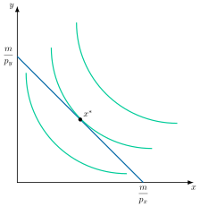
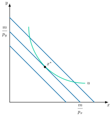
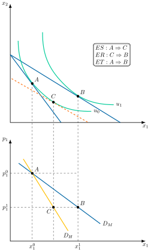
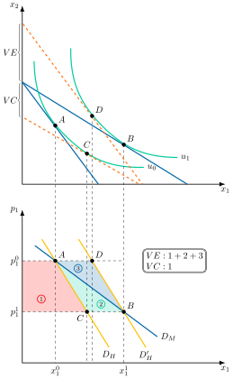
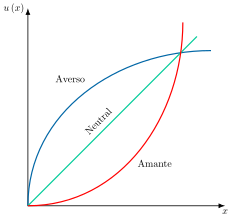
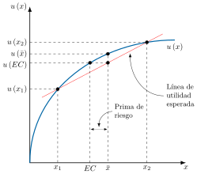
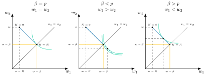
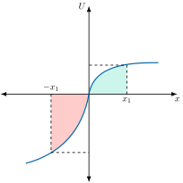

Apuntes para la oposición al Cuerpo de Diplomados Comerciales del Estado
4 Desarrollos de la teoría de la demanda: dualidad. Referencia a la integrabilidad de las preferencias y medidas de cambio en el bienestar. Elección en situaciones de riesgo. Otros desarrollos recientes.
4.1 Introducción  1'
1'
El consumidor, uno de los principales agentes económicos, tiene como objetivo maximizar la satisfacción que reporta el consumo de los bienes y servicios que se ofrecen en el mercado. Del estudio de su comportamiento se encarga la teoría de la demanda del consumidor, que trata de responder a 2 preguntas:
Dados unos determinados precios y nivel de renta, ¿qué decisión de consumo adoptan los agentes?
¿Cómo varían los agentes la decisión al modificar los parámetros de partida?
El enfoque ordinal de la utilidad permite derivar la función de utilidad y, a partir de esta, la demanda. Este enfoque se basa en:
El supuesto de racionalidad y la existencia de la función de utilidad, aunque la utilidad no es directamente observable, y por lo tanto las demandas serán difíciles de determinar.
Existencia de certidumbre, donde se supone que se conoce toda la información relevante, pero en la práctica existe incertidumbre al no conocerse con precisión todas las variables bajo las cuales los agentes toman sus decisiones.
Los desarrollos de la propia teoría de la demanda neoclásica superan estas dos limitaciones, respectivamente, a través de:
Teoría de la dualidad, un enfoque alternativo que permite obtener las funciones de demanda a partir de funciones observables o estimables, como la de gasto, sin necesidad de especificar la función de utilidad.
Teoría de la elección en situaciones de incertidumbre, cuando la información es imperfecta y, aunque simétrica, se diferencia según Knight (1921) en:
Elección en situaciones de riesgo, cuando el agente puede asignar probabilidad a los distintos resultados de su decisión.
Elección en situaciones de incertidumbre, cuando no se pueden asignar probabilidades o estas son subjetivas.
Por consiguiente, el objetivo fundamental de la exposición es el desarrollo de las dos líneas de investigación anteriores a través del siguiente esquema:
Teoría de la dualidad, que se desarrollará matemáticamente y se expondrá su aplicabilidad.
Elección en situaciones de riesgo, donde se realizará un recorrido histórico, se mostrará su aplicabilidad y sus críticas1.
4.2 Teoría de la dualidad 10'30"
Comenzando con la teoría de la dualidad, el desarrollo de determinadas técnicas matemáticas en la primera mitad del siglo XX dio lugar al concepto de dualidad en los programas de optimización, que surge para hacer operativo el enfoque ordinal mencionado anteriormente.
La teoría de la dualidad estudia la decisión del consumidor mediante dos problemas equivalentes, maximizar la utilidad con una renta dada (primal) y minimizar el gasto necesario para alcanzar una utilidad dada (dual), cuyas soluciones están relacionadas entre sí2. La dualidad permitirá relacionar funciones de utilidad y demanda mediante el estudio del problema primal y del problema dual, siendo aplicable en el estudio de la teoría del consumidor, la economía de bienestar y muchas otras áreas de la Economía.
Elementos comunes
Debido al carácter análogo de ambos problemas, los dos partirán del mismo conjunto de hipótesis y elementos. Específicamente compartirán la misma especificación de:
Conjunto de elección: conjunto de consumo es \(X=\mathbb{R}^{K}_{+}\)3. A este conjunto factible se le imponen una serie de propiedades: no vacío, cerrado, acotado inferiormente y convexo. Sobre este conjunto se definen las preferencias del agente.
Preferencias: se definen como una relación binaria “es al menos tan bueno como”, \(\succsim\), cumplen los axiomas de racionalidad4 y los axiomas de regularidad5, que garantizan que la relación binaria pueda representarse a través de una función de utilidad ordinal, \(u\left(x\right)\).
Conjunto presupuestario: Partimos del supuesto de que el consumidor opera en un mercado de competencia perfecta. Para adquirir los bienes disponibles el agente cuenta con una renta monetaria, \(m>0\). Este conjunto será no vacío, cerrado, acotado y convexo. El consumidor elige entre un conjunto dados unos precios, \(p\gg0\)6, y un nivel de renta, \(m>0\).
Problema primal
En este enfoque, el agente económico, con una restricción presupuestaria fija, busca la combinación de bienes que le permita maximizar la utilidad total.
El problema de maximización de utilidad como: \[\max\quad u\left(x\right) \tag{4.1}\]
sujeto a \[p\cdot x\leq m \tag{4.2}\]
La función de Lagrange correspondiente al problema de maximización: \[\mathcal{L}\left(x,\lambda\right)=u\left(x\right)-\lambda\cdot\left(p\cdot x-m\right) \tag{4.3}\] cuyas CPO, correspondientes a dos bienes, \(K=2\), son las siguientes: \[\begin{aligned} \dfrac{\partial\mathcal{L}}{\partial x_{1}}: & \:\dfrac{UMg_{x_{1}}}{p_{1}}=\lambda \end{aligned} \tag{4.4}\] \[\begin{aligned} \dfrac{\partial\mathcal{L}}{\partial x_{2}}: & \:\dfrac{UMg_{x_{2}}}{p_{2}}=\lambda \end{aligned} \tag{4.5}\] donde el multiplicador de Lagrange, \(\lambda\), es la utilidad marginal de la renta gastada7.
Combinando las ecuaciones ( 4.4) y ( 4.5) obtenemos la Relación Marginal de Sustitución: \[RMS_{x_{1},x_{2}}=\dfrac{UMg_{x_{1}}}{UMg_{x_{2}}}=\dfrac{p_{1}}{p_{2}} \tag{4.6}\] que es la condición de tangencia entre la curva de indiferencia más alta y la restricción presupuestaria.
Sistema Completo de Funciones de Demanda Ordinarias o Marshallianas
A partir de la solución y valorando en el óptimo (introduciendo la CPO en la RP) obtenemos el sistema de funciones de demanda ordinarias o marshallianas, \(x^{*}=x\left(p,m\right)\), (al no poner subíndice) nos expresa que la demanda de un bien dependerá de un vector de precios.
Cumple las siguientes propiedades:
El sistema de Funciones de Demanda Ordinarias existe (teorema de Weierstrass) y es único (teorema convexidad) , si las curvas de indiferencia son estrictamente convexas y por tanto la función de utilidad es estrictamente cuasi-cóncava.
A lo largo de la misma: i) Permanecen constantes la renta nominal y las preferencias de los agentes, ii) Varían el precio del bien que se trate, la renta real y el nivel de utilidad.
Observables y normales (es decir, se tiene en cuenta la variación del consumo debido a la variación de la renta real)
Continuas para todo el vector de precios y renta positivos.
Habitualmente decrecientes con respecto al precio propio y crecientes con respecto a la renta, aunque esta propiedad no es universal, quedando patente en excepciones como los bienes inferiores (demanda decreciente en la renta) y los bienes Giffen (demanda creciente en su propio precio).
Homogéneas de grado cero en renta y precios , lo que implica inexistencia de ilusión monetaria.
Se cumple la ley de Walras: gasta la totalidad de la renta.
Análisis gráfico
Gráficamente, en un plano de bienes \(x_{1}\) y \(x_{2}\) como el de la Figura 4.1 se representa el equilibrio derivado de la resolución de problema primal. Se dibuja en primer lugar la restricción del problema, es decir, la recta presupuestaria y, a continuación, se traza el punto de tangencia con la curva de indiferencia correspondiente, siendo este punto el vector de equilibrio \(x^{*}\)8. Por consiguiente, este vector de bienes \(x^{*}\) maximiza la utilidad del consumidor, dada la restricción presupuestaria, los precios y la renta9.

Aplicación
Una vez resuelto el problema, sustituyendo las demandas óptimas, \(x^{*}\), en la función de utilidad se obtiene la función indirecta de utilidad: \[u\left(x\left(p,m\right)\right)=v\left(p,m\right) \tag{4.7}\]
Función Indirecta de Utilidad
La función \(v\left(p,m\right)\) es la llamada función indirecta10 de utilidad, que representa la utilidad máxima alcanzable dados unos precios y nivel de renta, sin necesidad de solucionar el primal constantemente11. Posee las siguientes características:
Continua en \(p\) y \(m\), por serlo la función de utilidad y las funciones de demanda marshallianas.
Homogénea de grado 0 en \(p\) y \(m\), por serlo también las funciones de demanda ordinarias12.
No creciente en precios, \(p\), y estrictamente creciente en renta, \(m\), dado que una mejora del presupuesto siempre incrementa el bienestar y viceversa (Teorema de la Envolvente).
Cuasiconvexa en \(p\) y \(m\), dado que la utilidad máxima que puede obtenerse de conjuntos presupuestarios promedios es inferior a la que se alcanza en conjuntos presupuestarios extremos.
Una vez caracterizado el problema primal y su solución, el problema dual permite abordar la decisión del consumidor desde una perspectiva alternativa, invirtiendo los papeles de la función objetivo y la restricción.
Problema dual
Ahora se estudiará el problema dual o problema de minimización de gasto para \(p\gg0\) y un nivel de utilidad, \(\bar{u}>u\left(0\right)\), donde el gasto pasa a ser la función objetivo y el nivel de utilidad dado \(\bar{u}\) la restricción del problema:13 \[\min\quad p\cdot x \tag{4.8}\] sujeto a \[u\left(x\right)\geq\bar{u} \tag{4.9}\]
conocido como el problema dual de la teoría de la demanda, y cuya función auxiliar de Lagrange es: \[\mathcal{L}\left(x,\mu\right)=p\cdot x-\mu\cdot\left(u\left(x\right)-\bar{u}\right) \tag{4.10}\]
siendo las CPO:
\[\begin{aligned} \dfrac{\partial\mathcal{L}}{\partial x_{1}}: & \:UMg_{x1}=\dfrac{p_{1}}{\mu} \end{aligned} \tag{4.11}\] \[\begin{aligned} \dfrac{\partial\mathcal{L}}{\partial x_{2}}: & \:UMg_{x_{2}}=\dfrac{p_{2}}{\mu} \end{aligned} \tag{4.12}\] donde el multiplicador de Lagrange, \(\mu\), tiene una interpretación inversa al primal ya que ahora representa el gasto marginal de la utilidad, es decir, cuánto debería aumentar el gasto si \(u\) aumentase marginalmente.
Combinando las ecuaciones ( 4.11) y ( 4.12) obtenemos la Relación Marginal de Sustitución:
\[RMS_{x_{1},x_{2}}=\dfrac{UMg_{x_{1}}}{UMg_{x_{2}}}=\dfrac{p_{1}}{p_{2}} \tag{4.13}\]
Despejando \(\mu\) de cualquiera de las dos CPO se obtiene, además, la relación de dualidad entre ambos multiplicadores:
\[\mu=\dfrac{p_{1}}{UMg_{x_{1}}}=\dfrac{p_{2}}{UMg_{x_{2}}}\quad\Rightarrow\quad\dfrac{1}{\mu}=\lambda \tag{4.14}\]
Es decir, el multiplicador del dual es el inverso del multiplicador del primal: mientras que \(\lambda\) mide cuánto aumenta la utilidad ante una unidad adicional de renta, \(\mu\) mide cuánto debe aumentar el gasto para conseguir una unidad adicional de utilidad –son la misma tasa de intercambio entre renta y utilidad, vista desde direcciones opuestas–.
Sistema de funciones de demanda compensadas o hicksianas
La solución del programa anterior define el sistema de funciones de demanda compensadas o hicksianas, \(x^{*}=h\left(p,u\right)\).
El calificativo de compensadas proviene del hecho de que el presupuesto o gasto ya no es fijo sino variable, de modo que ante cualquier variación en los precios, la utilidad se mantendrá constante y dicho gasto se reajustará para acomodar o compensar dicha variación. Es decir, que indican las cantidades que comprarían los consumidores si se les compensara totalmente por los efectos renta de las variaciones del precio. Las demandas hicksianas solo tienen en cuenta el ES, no el ER.
Propiedades:
El sistema de Funciones de Demanda Compensada existe y es único (Teorema de las Funciones Implícitas).
Las funciones de demanda compensada son continuas en \(\left(p,\bar{u}\right)\) (Teorema del Máximo).
No es observable (porque U no lo es). No pueden estimarse empíricamente de manera directa. Será gracias a las relaciones de dualidad que sí podrán deducirse a partir de funciones marshallianas.
A lo largo de la misma: i) permanecen constantes el nivel de utilidad, es decir, la renta real en el sentido de Hicks, y las preferencias del agente, ii) varían los precios y la renta nominal, que se ajusta para compensar cada cambio de precio.
Es homogénea de grado 0 en P (sólo cuentan los precios relativos).
Se cumple el “no exceso de utilidad” (no excess utility, Mas-Colell, Whinston y Green, 1995), esto es, en el óptimo la restricción de utilidad siempre se cumple con igualdad, de modo que el consumidor alcanza exactamente el nivel de utilidad requerido y no más.
Solo mide los ES. Las funciones de demanda compensadas cumplen la “ley de demanda compensada”, es decir, precio y cantidad nunca se moverán en la misma dirección (no hay posibilidad de bienes Giffen en las demandas hicksianas por su carácter compensado). En el caso de encontrarnos con un bien normal, la curva de demanda compensada es siempre más inclinada que la marshalliana.
Análisis gráfico
Gráficamente, en un plano de bienes \(x_{1}\) y \(x_{2}\) como el de la Figura 4.2 se representa –al contrario que lo que se hizo en la Figura 4.1 con el problema primal– en primer lugar la curva de indiferencia que corresponde al nivel de utilidad \(u\), que pasa a ser la restricción del problema. En el problema dual, el equilibrio, \(x^{*}=h\left(p,u\right)\) , es la consecuencia de confrontar esta curva con la recta de balance tangente a la misma, teniendo en cuenta que la pendiente de la recta seguirá siendo el cociente de los precios de los dos bienes considerados.

Aplicación
De forma análoga a la función indirecta de utilidad, sustituyendo la demanda hicksiana, \(x^{*}\), en la función objetivo, \(p\cdot x\), en el óptimo se obtiene la función de valor (óptimo) del problema, que es la función de gasto14: \[p\cdot h\left(p,\bar{u}\right)=g\left(p,\bar{u}\right) \tag{4.15}\]
Función de gasto
La función \(g\left(p,\bar{u}\right)\) es la denominada función de gasto, que determina el gasto mínimo en el que el consumidor tiene que incurrir a unos precios, \(p\), para alcanzar un nivel determinado de utilidad, sin necesidad de estar resolviendo el dual constantemente. Posee las siguientes características:
Estrictamente positiva.
Continua en precios, \(p\), y utilidad, \(u\), por serlo las funciones de demanda compensadas.
Homogénea de grado 1 en precios, por serlo de grado 0 las funciones de demanda compensadas. Esto implica que ante variaciones proporcionales de los precios, el gasto variará en esa misma proporción.
Estrictamente creciente en \(u\) y no decreciente en \(p\), un aumento de la utilidad requerida aumenta siempre el gasto mínimo para lograrlo y viceversa.
Cóncava en precios. Ante un aumento de ciertos precios, el consumidor podría comportarse de manera pasiva y no modificar su cesta. Sin embargo, su comportamiento optimizador le lleva a sustituir bienes, por lo que el incremento del gasto será menor que el derivado del incremento de precios.
Recapitulando, se han obtenido todos los elementos necesarios (funciones de demanda y funciones valor (gasto), con sus propiedades) para pasar a continuación a establecer las relaciones existentes entre los diferentes componentes del problema primal y el dual.
Teorema básico de la dualidad
Una vez estudiados el problema primal y el dual se podrá establecer el denominado Teorema Básico de la Dualidad.
Teorema Básico de la Dualidad
determina que, si una cesta \(x^{*}\) soluciona el primal con renta \(m\) y se plantea el dual exigiendo precisamente la utilidad máxima alcanzada, \(u\left(x^{*}\right)\), entonces \(x^{*}\) también soluciona el dual y el gasto mínimo coincide con \(m\).
De esta forma, ambos problemas son idénticos siempre que se realice el debido intercambio de información entre problemas:
Existencia: Existe una solución al problema primal si existe una solución al problema dual.
Identidad entre ambas soluciones: Cuando la renta, la cual actúa como restricción en el problema primal es igual al gasto mínimo en el problema dual, y la utilidad que actúa como restricción en el problema dual es igual a la utilidad máxima en el primal entonces en el óptimo ambas soluciones serán idénticas. Es decir, siendo el vector de precios el mismo en ambos problemas, en el óptimo las cantidades demandadas según la función de demanda ordinaria (marshalliana) y compensada (hicksiana) coinciden.
Además, es importante señalar que la solución del primal y el dual solo coinciden en un punto, esto es en la cesta óptima, porque ante variaciones en los precios relativos la demanda hicksiana mantiene constante la utilidad, mientras que la demanda ordinaria incorpora además el efecto de esas variaciones sobre la capacidad adquisitiva, esto es, el ER.
No obstante, existe un par de relaciones de equivalencia/dualidad entre las funciones resultado del problema primal y del problema dual que se derivan de este “Teorema Básico de Dualidad”. Son relaciones referidas tanto a las funciones de valor (FIU y FG) cómo a las funciones de demanda (marshallianas y hicksianas).
Dualidad en las funciones de valor y de demanda
Concretamente, estas relaciones se manifiestan de las siguientes 2 formas:
Dualidad entre las funciones de valor: La función indirecta de utilidad es la inversa de la función de gasto, pudiéndose obtener mediante la sustitución y la reorganización de términos y su interpretación es que todo nivel de utilidad óptimo –máximo– tiene asociado un nivel de gasto óptimo –mínimo–, y viceversa. Por ejemplo, para una función de utilidad de sustitutos perfectos, \(u=x_{1}+x_{2}\): \[v\left(p,\bar{m}\right)=\dfrac{m}{p_{1}+p_{2}}\longrightarrow g\left(p,\bar{u}\right)=\left(p_{1}+p_{2}\right)\cdot u \tag{4.16}\] 15
Dualidad entre funciones de demanda: las funciones de demanda marshalliana y hicksiana pueden obtenerse mediante el problema inverso, a partir de la sustitución de argumentos –la demanda marshalliana se puede obtener a partir de la hicksiana sustituyendo por la función indirecta de utilidad–, siendo así una extensión del teorema básico de la dualidad: \[\begin{aligned} x_{i}\left(p,m\right)= & h_{i}\left(p,v\left(p,m\right)\right)\\ h_{i}\left(p,\bar{u}\right)= & x_{i}\left(p,g\left(p,\bar{u}\right)\right) \end{aligned} \tag{4.17}\]
| Problema | Funciones de demanda | Denominación y propiedades |
|---|---|---|
| Primal \(\begin{array}{c} \max\quad u\left(x\right)\\ \text{s.a}\quad p\cdot x=m \end{array}\) | \(x=x\left(p,m\right)\) | \(\begin{array}{c} \text{ordinales o marshallianas}\\ \text{observables}\\ \text{homog{é}neas de grado 0 en }p\text{ y } m \end{array}\) |
| Dual \(\begin{array}{c} \min\quad p\cdot x\\ \text{s.a}\quad u\left(x\right)=\bar{u} \end{array}\) | \(x=h\left(p,\bar{u}\right)\) | \(\begin{array}{c} \text{compensadas o hicksianas}\\ \text{no observables}\\ \text{homog{é}neas de grado 0 en }p\text{ (relativos)} \end{array}\) |
| Solución | Denominación y propiedades | |
| \(u\left(x\left(p,m\right)\right)=v\left(p,m\right)\) | \(\begin{array}{c} \text{funci{ó}n indirecta de utilidad}\\ \text{no observables}\\ \text{homog{é}neas de grado 0 en }p\text{ y } m \end{array}\) | |
| \(p\cdot h\left(p,\bar{u}\right)=g\left(p,\bar{u}\right)\) | \(\begin{array}{c} \text{funci{ó}n de gasto}\\ \text{observables}\\ \text{homog{é}neas de grado 1 en }p \end{array}\) |
Aplicaciones de la teoría de la dualidad
Por otro lado, del análisis de la dualidad se deducen una serie de resultados complementarios de enorme importancia a la hora de realizar estimaciones econométricas, análisis de bienestar y clasificar los bienes en base a su complementariedad o sustituibilidad.
Obtención demanda ordinaria y compensada sin conocer la función de utilidad
Una de esas aplicaciones es la obtención de forma simple de las funciones de demanda ordinaria y compensada sin necesidad de conocer la función de utilidad a través de la Identidad de Roy y el Lema de Shephard.
La Identidad de Roy (1947), pone en relación la función indirecta de utilidad con las funciones de demanda marshallianas. Por consiguiente, dada la función indirecta de utilidad se obtiene la demanda marshalliana16: \[x_{k}\left(p,m\right)=-\dfrac{\partial v\left(p,m\right)/\partial p_{k}}{\partial v\left(p,m\right)/\partial m},\qquad\forall k=1,\ldots,K \tag{4.18}\]
Por su parte, el Lema de Shephard17, muestra la relación entre la función de gasto y las funciones de demanda hicksianas. Por lo tanto, dada la función de gasto se pueden conocer las demandas compensadas/hicksianas: \[\dfrac{\partial g\left(p,u\right)}{\partial p_{k}}=h_{k}\left(p,u\right),\qquad\forall k=1,\ldots,K \tag{4.19}\]
Obtención ecuación de Slutsky
En segundo lugar, la ecuación de Slutsky18 relaciona las derivadas de las funciones hicksianas y marshallianas, permitiendo descomponer los efectos de la variación de un precio en efecto renta y efecto sustitución19.
Analíticamente, se parte de una situación donde las demandas hicksianas y marshallianas coinciden20 para la asignación óptima:
\[h\left(p,u\right)=x\left(p,m\right) \tag{4.20}\] donde se puede hacer que la demanda marshalliana dependa de \(u\) sustituyendo \(m\) por la función de gasto, \(g\left(p,\bar{u}\right)\):
\[h\left(p,u\right)=x\left(p,g\left(p,\bar{u}\right)\right) \tag{4.21}\] por lo tanto es análogo derivar la demanda hicksiana del bien \(x_{i}\) con respecto al precio del bien \(j\), \(p_{j}\), que derivar la demanda marshalliana del bien \(x_{i}\) siguiendo la regla de la cadena21:
\[\dfrac{\partial h_{i}\left(p,u\right)}{\partial p_{j}}=\dfrac{\partial x_{i}\left(p,m\right)}{\partial p_{j}}+\dfrac{\partial x_{i}\left(p,m\right)}{\partial m}\cdot\dfrac{\partial g\left(p,u\right)}{\partial p_{j}} \tag{4.22}\]
Aplicando el lema de Shephard, se podrá sustituir el último término que está multiplicando por la demanda hicksiana, que será equivalente a la marshalliana:
\[\dfrac{\partial h_{i}\left(p,u\right)}{\partial p_{j}}=\dfrac{\partial x_{i}\left(p,m\right)}{\partial p_{j}}+\dfrac{\partial x_{i}\left(p,m\right)}{\partial m}\cdot x_{j}\left(p,m\right) \tag{4.23}\] y reorganizando los términos y cambiando el signo \(+\) por un \(-\)22 en ( 4.23) se obtendrá la ecuación de Slutsky, donde el efecto total, \(ET\), es la suma del efecto sustitución, \(ES\), y del efecto renta, \(ER\):
\[\underbrace{\dfrac{\partial x_{i}\left(p,m\right)}{\partial p_{j}}}_{\text{Efecto total}}=\underbrace{\dfrac{\partial h_{i}\left(p,u\right)}{\partial p_{j}}}_{\text{Efecto sustituci{ó}n}}\underbrace{-\dfrac{\partial x_{i}\left(p,m\right)}{\partial m}\cdot x_{j}\left(p,m\right)}_{\text{Efecto renta}} \tag{4.24}\]
Además, la ecuación de Slutsky se puede expresar en términos de elasticidades donde la elasticidad precio de la demanda marshalliana de \(x_{i}\) respecto a \(p_{j}\), \(\varepsilon_{i,j}\), será igual a la elasticidad precio de la demanda hicksiana de \(x_{i}\) respecto de \(p_{j}\), \(\varepsilon^{C}_{i,j}\), menos la elasticidad con respecto a la renta, \(m\), de \(x_{i}\), \(\varepsilon_{m}\), multiplicada por la participación en el gasto del bien \(x_{j}\), \(s_{j}\)23:
\[\varepsilon_{i,j}=\varepsilon^{C}_{i,j}-s_{j}\cdot\varepsilon_{m} \tag{4.25}\]
Análisis gráfico
Gráficamente, en un plano de los bienes \(x_{1}\) y \(x_{2}\) como el de la Figura 4.3:
Se parte de una situación inicial con una recta presupuestaria y una curva de indiferencia, \(u_{0}\), tangente dando lugar al punto de equilibrio \(A\).
A través de un ejercicio de estática comparativa con una disminución en el precio del bien \(x_{1}\), \(\downarrow p_{1}\), se podrá descomponer el efecto renta y sustitución.
Ante la disminución del precio, la recta presupuestaria pivotará sobre el eje del bien \(x_{2}\), expandiendo el conjunto presupuestario y permitiendo al consumidor alcanzar una nueva curva de indiferencia, \(u_{1}\), que le reportará más utilidad en el punto \(B\). Para obtener el efecto sustitución, se desplazará la nueva recta presupuestaria hasta que sea tangente con la antigua curva de indiferencia \(u_{0}\) en el punto \(C\).
Por lo tanto, el efecto sustitución sería el paso de \(A\) a \(C\), el efecto renta el paso de \(C\) a \(B\) y el efecto total el paso de \(A\) a \(B\).
Para obtener la demanda marshalliana y hicksiana se trasladarán todos estos puntos a un plano adyacente de precios del bien \(x_{1}\), \(p_{1}\), y cantidades del bien \(x_{1}\).
El punto \(A\) se obtendrá para el precio inicial, \(p^{0}_{1}\), y la cantidad inicial, \(x^{0}_{1}\), mientras que el punto \(B\) se dará para el nuevo precio, \(p^{1}_{1}\), y la nueva cantidad, \(x^{1}_{1}\).
Uniendo ambos puntos se obtendrá la demanda marshalliana, \(D_{M}\).
El punto \(C\) se correspondería con el punto \(B\) solo que comprando una menor cantidad y uniendo el punto \(A\) con el punto \(C\) se obtendrá la demanda hicksiana, \(D_{H}\).

En suma, de la ecuación de Slutsky se obtiene que:
El efecto sustitución es negativo, por el carácter semidefinido negativo de la matriz de efecto sustitución24.
El signo del efecto renta depende del bien:
Si la elasticidad renta es positiva entonces el bien es normal.
Si la elasticidad renta es negativa entonces el bien es inferior.
Si el bien es normal, el efecto renta refuerza al efecto sustitución y la demanda tiene pendiente negativa. Si el bien es inferior, el efecto renta se opone al efecto sustitución y el resultado depende de cuál de los dos domine:
Si \(\left|ES\right|>\left|ER\right|\), la demanda sigue teniendo pendiente negativa.
Si \(\left|ES\right|<\left|ER\right|\), la demanda tiene pendiente positiva y se está ante un bien Giffen.
De lo anterior se derivan las diferencias en la pendiente de la demanda hicksiana y marshalliana:
Para bienes normales, la demanda hicksiana tendrá una mayor pendiente que la marshalliana debido al efecto renta negativo presente únicamente en la demanda marshalliana25.
Para bienes inferiores ocurre lo contrario: la demanda marshalliana es más inclinada que la hicksiana, porque el efecto renta compensa en parte el efecto sustitución. En el caso de bienes frontera26, con efecto renta nulo, \(ER=0\), ambas tienen la misma pendiente.
El signo del efecto sustitución cruzado, \({\frac{\partial h_{i}}{\partial p_{j}}}\) , puede variar pero las relaciones sí son simétricas, \({\frac{\partial h_{i}}{\partial p_{j}}} ={\frac{\partial h_{j}}{\partial p_{i}}}\) :
Si el efecto sustitución cruzado, es decir, la variación de la demanda hicksiana del bien \(i\) ante un cambio del precio del bien \(j\), es positivo, los bienes \(i\) y \(j\) son sustitutivos netos27.
Si es negativo, son complementarios netos.
Si es nulo, son independientes.
Problema de la integrabilidad de preferencias
En tercer lugar, una de las principales preguntas para validar la teoría neoclásica de la demanda es qué características deben cumplir las demandas estimadas para garantizar que provienen de unas preferencias de buen comportamiento. El pionero en resolver el problema de la integrabilidad de preferencias fue el ingeniero y economista italiano Antonelli (1886).
La respuesta a esta pregunta se conoce hoy en día como el Teorema de la Integrabilidad28, que establece que un sistema de demandas marshallianas está generado por una función de utilidad creciente y cuasicóncava si y solo si dicho sistema satisface las siguientes propiedades:
Ley de Walras, el sistema deberá agotar el total del gasto. \[\Sigma p_{i}\cdot x_{i}=m \tag{4.26}\]
Matriz de efectos sustitución simétrica, es decir, el efecto sustitución que una variación del precio del bien \(j\) tiene sobre la demanda del bien \(i\) es igual al que una variación del precio de \(i\) tiene sobre la demanda de \(j\). Por el Teorema de Frobenius, esta simetría garantiza que el sistema de demandas pueda integrarse en una función de gasto29. Esta es la condición de simetría de los efectos sustitución cruzados30.
Matriz de efectos sustitución semidefinida negativa, lo que equivale a la concavidad de la función de gasto en precios.
Por consiguiente, a partir del sistema de demandas marshallianas se podrá integrar la función de gasto y por el Teorema Básico de la Dualidad de la función de gasto se podrá derivar la función indirecta de utilidad, de la que se extrae la función de utilidad.
Desde un punto de vista práctico la integrabilidad es relevante para el análisis de bienestar, pues se podrá recuperar la función de gasto que es clave para realizar dicho análisis.
Sistemas de demanda empíricos
Esta relevancia práctica de la integrabilidad culminó en el desarrollo de los sistemas de demanda flexibles: funciones de gasto que se ajustan directamente a los datos observados y en las que las restricciones teóricas de homogeneidad y simetría se traducen en condiciones sencillas sobre los parámetros, que pueden imponerse o contrastarse, mientras que la agregación se cumple por construcción. El más influyente es el Sistema Casi Ideal de Demanda (AIDS) de Deaton y Muellbauer (1980), que sigue siendo hoy la referencia estándar en econometría aplicada de la demanda; su extensión cuadrática, el QUAIDS de Banks et al. (1997), es de uso habitual en organismos como el Banco Mundial, el FMI o la OCDE-FAO para analizar reformas de IVA y subsidios alimentarios (véase Apéndice 4.A.7).
Cálculo monetario de alteraciones en el bienestar
A su vez, la teoría de la dualidad proporciona instrumentos que cuantifican monetariamente la variación de la utilidad. La función de gasto determina el gasto mínimo para alcanzar determinado nivel de utilidad.
Existen 2 medidas alternativas basadas en la función de gasto:
Analizando la demanda de Hicks mediante variaciones compensadas o equivalentes.
Analizando la demanda marshalliana mediante el excedente del consumidor.
En función de qué precios de referencia se tomen se computará la variación equivalente o la variación compensatoria.
Variación equivalente
La variación equivalente, \(VE\), al mantener como referencia los precios iniciales se utiliza para cuantificar monetariamente el cambio de bienestar al producirse un cambio hipotético de precios. Por lo tanto, es la cantidad de renta que, a los precios iniciales, habría que dar al consumidor, o quitarle, para que alcanzase el mismo nivel de utilidad que obtiene tras el cambio de precios. Si es positiva, el cambio mejora su bienestar y, si es negativa, lo empeora31.
Variación compensatoria
La variación compensatoria, \(VC\), al tomar como referente los precios finales, asume que el cambio en precios va a tener lugar y cuantifica el cambio de bienestar que corresponde a la compensación. Por lo tanto, es la cantidad de renta que, a los precios finales, habría que quitar al consumidor, o darle, para que volviese al nivel de utilidad que tenía antes del cambio de precios32. Si es positiva, el cambio mejora su bienestar y, si es negativa, lo empeora33.
Análisis gráfico
Gráficamente, en un plano de bienes \(x_{1}\) y \(x_{2}\) como el de la Figura 4.4, se continuará con el análisis de la Figura 4.3,
Donde se puede observar que la diferencia entre nueva recta presupuestaria y la que se trasladó hasta la antigua utilidad \(u_{0}\) es la variación compensatoria.
Por su parte, para obtener la variación equivalente se trasladará la antigua restricción hacia la nueva utilidad, \(u_{1}\), hasta el punto de tangencia \(D\), donde la diferencia entre esta y la nueva restricción es la variación equivalente, \(VE\).
Trasladando todos estos puntos a un plano adyacente de \(p_{1}\) y \(x_{1}\), donde, como consecuencia del cambio en el nivel de utilidad, la demanda hicksiana se expande a \(D^{\prime}_{H}\), surgiendo de unir los puntos \(D\) y \(B\).
Se pueden observar 3 áreas: la 1, delimitada entre los dos precios, el punto \(A\) y el \(C\), la 2, delimitada entre los puntos \(A\), \(B\) y \(C\) y la 3, delimitada por los puntos \(A\), \(D\) y \(B\).
La Variación compensatoria comprendería el área 1, mientras que
La variación equivalente surgiría de la suma de las 3 áreas.

Estudio analítico
Analíticamente, la variación compensatoria sería la integral desde los nuevos precios, \(p_{1}\), a los antiguos, \(p_{0}\), de la demanda hicksiana inicial, \(h\left(p,u_{0}\right)\):
\[VC=\int^{p_{0}}_{p_{1}}h\left(p,u_{0}\right)\cdot dp_{1} \tag{4.27}\] mientras que la variación equivalente sería la integral desde los nuevos precios, \(p_{1}\), a los antiguos, \(p_{0}\), de la demanda hicksiana final, \(h\left(p,u_{1}\right)\):
\[VE=\int^{p_{0}}_{p_{1}}h\left(p,u_{1}\right)\cdot dp_{1} \tag{4.28}\]
Entre los aspectos positivos de estos instrumentos está que permite jerarquizar un espectro de utilidades y con ello permitir cuantificar monetariamente cambios en el bienestar y permite estimar la variación de bienestar cuando varían uno o varios precios, algo que no tendrán otras medidas34.
No obstante, entre los aspectos negativos destaca que estas medidas comparan con unos precios no observables –ausencia de contrafáctico–, lo que supone un problema y sobre todo que será necesario disponer de una función de gasto –equivalente a disponer de información completa–, cuando lo normal es carecer de ella.
Excedente del consumidor
En caso de no disponer de información suficiente se podrán evaluar dichos impactos mediante la variación del excedente del consumidor marshalliano, \(VEC\). El excedente del consumidor es la diferencia entre cuánto valora un bien y el pago que realiza por el mismo, por lo que su variación es el cambio en el bienestar derivado de la modificación del precio del bien:
\[VEC=\int^{p_{0}}_{p_{1}}D_{M}\cdot dp_{1} \tag{4.29}\] aunque lo realiza mediante la demanda marshalliana, que está sesgada35.
Por ello destaca:
Ser una herramienta menos potente que las anteriores, dado que solo admite la variación de un precio y no un espectro.
No estará sesgada cuando el efecto renta sea nulo, como ocurre con preferencias cuasilineales.
En presencia de un efecto renta no nulo, tendrá un valor intermedio entre la variación equivalente y la compensatoria. Para un bien normal, la \(VEC\) subestima la \(VE\) y sobreestima la \(VC\) y su valor en la Figura 4.4 corresponde con la suma de las áreas 1 y 2.
Índices de precios
Finalmente, si se desconoce la función marshalliana se podrá realizar un análisis de bienestar aún más reducido si se conocen las cestas de consumo iniciales, finales o ambas. La variación equivalente y la variación compensatoria se podrán aproximar mediante los índices de precios, que buscarán ajustar la renta del agente para que alcance la cesta de consumo, final o inicial, a los precios iniciales o finales respectivamente. Destacan:
El Índice de Laspeyres, \(IL\), que toma como referencia la cesta de consumo inicial, mide el cambio relativo en el coste necesario para mantener la cesta de consumo inicial (es decir, IPC o IPCA, aunque realmente son índices encadenados, poseen base móvil) \[IL=\dfrac{p^{1}\cdot x^{0}}{p^{0}\cdot x^{0}} \tag{4.30}\] si consideramos un aumento de precios, el IL sobreestima el aumento del coste de mantener el mismo nivel de bienestar individual cuando se incrementen los precios, puesto que no se consideran las relaciones de sustituibilidad entre los bienes.
El Índice de Paasche, \(IP,\) que toma como referencia la cesta de consumo final, mide el cambio relativo en el coste necesario para adquirir la cesta de consumo final a los precios nuevos (es decir, Deflactor del PIB)36 \[IP=\dfrac{p^{1}\cdot x^{1}}{p^{0}\cdot x^{1}} \tag{4.31}\] subestima el aumento del coste de vida cuando suben los precios.
Estas aproximaciones buscan que el agente alcance una cesta de consumo determinada, no un nivel de utilidad constante, como hacen la VE y la VC. Por ello, presentan un sesgo predecible, ya que no consideran la sustitución entre bienes:
El Índice de Paasche (IP) sirve para aproximar la VE: la sobrestima cuando los precios bajan y la subestima cuando suben.
El Índice de Laspeyres (IL) sirve para aproximar la VC: la subestima cuando los precios bajan y la sobrestima cuando suben.
Concretamente, ante el impacto sobre el bienestar de la disminución del precio37 que hemos analizado el orden de magnitud de los instrumentos analizados quedaría en el siguiente orden: \(IL<VC<VEC<VE<IP\)38. Este orden refleja el grado de aproximación al verdadero cambio en bienestar, desde el índice más conservador (Laspeyres) hasta el más generoso (Paasche), pasando por las medidas basadas en utilidad y demanda.
| Tipo de bien39 | Cambio de precios | Orden de magnitud (de menor a mayor) | Comentario clave |
|---|---|---|---|
| Bien normal | ↓ Bajada | \(IL<VC<VEC<VE<IP\) | Efecto renta positivo; todas las medidas captan mejora |
| ↑ Subida | \(IP<VE<VEC<VC<IL\) | Efecto renta refuerza la pérdida de bienestar | |
| Bien inferior | ↓ Bajada | \(IL<VC<VEC<VE<IP\) | Efecto renta negativo; puede contrarrestar el efecto sustitución |
| ↑ Subida | \(IP<VE<VEC<VC<IL\) | Riesgo de bien Giffen si ER > ES | |
| Bien Giffen | ↓ Bajada | \(IL<VC<VEC<VE<IP\) | Demanda disminuye pese a la bajada del precio (paradoja de Giffen); VC puede ser negativa |
| ↑ Subida | \(IP<VE<VEC<VC<IL\) | Demanda aumenta con el precio; VC puede ser positiva | |
| Bien neutral | ↓ o ↑ | \(IL=VC=VEC=VE=IP\) | No hay efecto sustitución ni renta; todas las medidas coinciden |
4.3 Elección en situaciones de riesgo 8'
Hasta ahora se ha analizado la decisión del consumidor bajo certeza, donde precios y renta son conocidos con seguridad. Sin embargo, en la realidad las elecciones de un agente no dependen solo de sus propias decisiones, sino también de elementos desconocidos en el momento de decidir. Si el agente es capaz de asignar probabilidades a los distintos resultados de una decisión, entonces se encuentra en una situación de riesgo.
Estados de la naturaleza
En dicha situación, los estados de la naturaleza son las distintas situaciones que pueden darse en el mundo, sobre las que el agente no tiene control, y que, combinadas con las acciones o estrategias que elige, determinan un resultado o pagos contingentes \(\left(x_{1},\dots,x_{n}\right)\)40.
Lotería
Para ello utiliza la lotería que es un instrumento que representa alternativas de riesgo, una lista \(L=\left(p_{1},\dots,p_{n}\right)\) con \(p_{n}\geq0\) para todo \(n\) y \(\sum_{n}p_{n}=1\), donde \(p_{n}\) es la probabilidad de que el suceso \(n\) tenga lugar41.Por lo tanto, una lotería es una distribución de probabilidad donde \(p_{n}\) es la probabilidad de que ocurra el suceso \(n\) asociado a un resultado \(x_{n}\).
Criterio de decisión
Con todo ello el agente podrá adoptar un criterio de decisión, que es un proceso mediante el cual toma decisiones reduciendo a términos ciertos cada estado de la naturaleza ponderado por su probabilidad.
Maximización de la renta esperada
Históricamente, el criterio de decisión consistía en maximizar la renta esperada de cada estrategia en un contexto de juego actuarialmente justo, que es aquel donde el coste de jugar es igual a la ganancia esperada, por lo que el valor neto del juego es 0: \[\mathbb{E}\left(x\right)=\sum\limits_{n=1}^{N}x_{n}\cdot p_{n}=0 \tag{4.32}\]
Aunque es un método muy operativo, también tiene sus inconvenientes ya que:
Precisa de un elevado número de observaciones para fundamentar la decisión sobre la esperanza matemática, en caso contrario la varianza sería muy elevada y se perdería valor estadístico.
Conduce a la paradoja de San Petersburgo: un juego en el que se lanza una moneda hasta que sale cara, con un premio que se duplica en cada lanzamiento, tiene un valor esperado infinito, de modo que según este criterio un individuo debería estar dispuesto a pagar cualquier cantidad por jugarlo, cuando en la práctica nadie pagaría más que unos pocos euros42. Por lo tanto, el criterio de maximización de ingreso esperado conduce a una contradicción, dado que ningún individuo racional aceptaría esto.
Para solucionar esta paradoja, Daniel Bernoulli propone la maximización de la utilidad esperada
Maximización de la utilidad esperada
Bernoulli (1738/1954) argumenta que los individuos no se preocupan directamente de la renta esperada sino de la utilidad que se deriva de la misma, es decir, maximizan su “esperanza moral” en vez de la renta esperada. Si se asume que la utilidad marginal de la riqueza es decreciente entonces el juego en el caso de San Petersburgo converge a una utilidad esperada finita pese a que la renta esperada sea infinita. Por lo tanto, los agentes solo estarán dispuestos a pagar una cantidad finita para jugar.
Matemáticamente, Bernoulli se basa en una función de utilidad logarítmica, donde \(x_{n}\) representa el premio en el n-ésimo intento: \[u\left(x_{n}\right)=\ln\left(x_{n}\right) \tag{4.33}\] que exhibe una utilidad marginal decreciente (es decir, \(u^{'}>0\) pero \(u^{''}<0\)) y el valor de la utilidad esperada, \(UE\), converge a un número finito \[UE=\sum\limits_{n=1}^{\infty}p_{n}\cdot u\left(x_{n}\right)=\sum\limits_{n=1}^{\infty}\dfrac{1}{2^{n}}\cdot ln\left(2^{n}\right) \tag{4.34}\]
Sin embargo, esta solución no resuelve totalmente el problema debido a que la función de utilidad no está acotada, lo que da lugar a una reedición de la paradoja bajo otro tipo de premios43.
Teoría de la utilidad esperada
Hubo que esperar hasta los años 40 para que Von Neumann y Morgenstern (1944) desarrollasen los fundamentos matemáticos de la solución de Bernoulli a la paradoja de San Petersburgo. La idea central es que el agente posee una función de utilidad definida sobre el conjunto de resultados posibles y que cuando se enfrenta a loterías sobre dichos resultados elige la que maximiza el valor esperado de \(u\left(x\right)\).
Por tanto, el agente decide sobre distribuciones de probabilidades de los resultados, disponiendo de una estructura de preferencias sobre dichas distribuciones, representadas por medio de una función que maximiza.
Analíticamente, los agentes poseen unas preferencias representables a través de una relación de preferencia binaria “es al menos tan bueno como”, \(\succsim\), sobre la lotería. Esta relación binaria cumplirá los siguientes axiomas:
Axioma 1 Completitud, cualquier par de loterías puede ser comparado.
Axioma 2 Transitividad, garantiza una relación de preferencias coherente.
Axioma 3 Continuidad, cambios marginales en la probabilidad no cambian la naturaleza de ordenación de dos loterías.
Axioma 4 Independencia, si se combinan dos loterías con una misma tercera lotería y en la misma proporción, la ordenación de preferencia entre las dos primeras no cambia44.
El cumplimiento de los axiomas de racionalidad junto al de continuidad implican la existencia de una función de utilidad que preserva la ordenación de preferencias:45 \[u:L\rightarrow\mathbb{R}/L\succsim L^{\prime}\Leftrightarrow u\left(L\right)\geq u\left(L^{\prime}\right) \tag{4.35}\]
Si a estos axiomas añadimos el axioma de independencia, entonces garantiza por el teorema de la utilidad esperada que la relación binaria de preferencias podrá ser representada mediante una función de utilidad esperada. De esta forma, la utilidad de una lotería será la suma ponderada de las utilidades de Bernoulli por las probabilidades de los distintos sucesos46: \[u\left(L\right)=\sum\limits_{n=1}^{N}u_{n}\cdot p_{n} \tag{4.36}\] garantizando este teorema que los agentes se comportarán como si asignasen utilidades a cada uno de los resultados. Así, se cumple el concepto de utilidad esperada de Bernoulli. Los jugadores no maximizan la esperanza matemática del juego, sino su utilidad esperada. La UE de una alternativa cualquiera (lotería) es la esperanza matemática de la utilidad de los resultados posibles.
Propiedades de la función de utilidad VNM
Es única salvo transformaciones afines positivas, es decir, un cambio de escala positivo más una traslación del origen.
Continuidad y monotonía: \(u\left(x\right)\) es continua y creciente en los pagos, \(x\).
Ordinal en loterías, cardinal en resultados: ordena loterías por utilidad esperada.
Separabilidad aditiva y linealidad en probabilidades: la utilidad de cada resultado es independiente del resto.
Normalización: puede acotarse entre 0 (peor resultado) y 1 (mejor resultado).
Diferenciabilidad: deseable que sea dos veces diferenciable para analizar actitudes frente al riesgo.
Por otro lado, en el caso de que el conjunto de resultados sea un intervalo continuo y la lotería pueda ser expresada como una función de densidad, entonces la función de utilidad se expresará de la siguiente forma: \[u\left(L\right)=\int^{b}_{a}u\left(x\right)f\left(x\right)\cdot dx \tag{4.37}\]
Ventajas función de utilidad esperada
Entre las ventajas de la función de utilidad esperada destacan:
La idea de que se valore la esperanza de la utilidad y no al revés permite resolver la paradoja de San Petersburgo y explicar los comportamientos observados.
La función de utilidad posee unas propiedades técnicas convenientes desde el punto analítico, ya que será sensible a momentos de primer orden –la media– y superiores –como la varianza–.
La utilidad esperada pasa a tener un valor normativo, siendo una gran guía de decisión.
Finalmente, se observa que la función de utilidad esperada consta de dos componentes: uno subjetivo, la utilidad de Bernoulli, y otro objetivo, la distribución de probabilidad.
Actitudes ante el riesgo
La utilidad de Bernoulli, \(u\left(x\right)\), representa las preferencias individuales frente a distribuciones de probabilidad definidas sobre cantidades monetarias ciertas. En este marco, se asume que \(u\left(x\right)\) es creciente, reflejando que los individuos prefieren más riqueza a menos.
La forma concreta que adopte la función de utilidad permite identificar la actitud frente al riesgo del agente.
Equivalente cierto
Para su adecuado análisis, conviene introducir antes el equivalente cierto, \(EC\), que es la cantidad de dinero segura que proporciona la misma utilidad que la utilidad esperada de la lotería, \(u\left(EC\right)={\mathbb{E}\left[u\left(x\right)\right]}\) 47.
Perfiles de riesgo
Por lo tanto, un agente será:
Averso al riesgo, cuando prefiere recibir con certeza el valor esperado de la lotería antes que jugarla, \(u\left(\bar{x}\right)>{\mathbb{E}\left[u\left(x\right)\right]}\) , por lo que la función de utilidad será cóncava48.
Neutral al riesgo, cuando le es indiferente jugar la lotería o recibir con certeza su valor esperado, \(u\left(\bar{x}\right)={\mathbb{E}\left[u\left(x\right)\right]}\) , por lo que la función de utilidad será lineal.
Amante del riesgo, cuando prefiere jugar la lotería antes que recibir con certeza su valor esperado, \(u\left(\bar{x}\right)<{\mathbb{E}\left[u\left(x\right)\right]}\) , por lo que la función de utilidad será convexa.

La intuición económica que subyace es el efecto asimétrico de la renta ganada frente a la renta perdida: partiendo de un nivel de renta dado, y ante variaciones equivalentes al alza y a la baja, la desutilidad marginal de la renta perdida es mayor que la utilidad marginal de la renta ganada –de ahí que la utilidad marginal de la riqueza sea decreciente para un agente averso–.
Prima de riesgo
Gráficamente, en un plano de utilidad, \(u\left(x\right)\) y de cantidad de dinero, \(x\), como el de la Figura 4.6 se representa una función de utilidad, \(u\left(x\right)\), de un agente averso al riesgo el cual pasará a jugar una lotería donde \(x_{1}\) y \(x_{2}\) son el menor y el mayor premio respectivamente, con sus respectivas correspondencias de utilidad, \(u\left(x_{1}\right)\) y \(u\left(x_{2}\right)\).
Ambos puntos estarán unidos por la línea de utilidad esperada, que permitirá calcular a partir de la cantidad esperada del juego, \(\bar{x}\), la utilidad esperada de la lotería, \(u\left(EC\right)\) y su cantidad asociada, es decir, el equivalente cierto, \(EC\). Se puede observar cómo la utilidad del valor esperado de la lotería, \(u\left(\bar{x}\right)\), es superior a su utilidad esperada, \(u\left(EC\right)\). Por ello, el equivalente cierto es inferior al valor esperado, y la diferencia entre ambas cantidades de dinero es la prima de riesgo, \(PR\): \[PR=\bar{x}-EC \tag{4.38}\]

Concretamente, esta prima representa la cantidad de dinero que el agente estaría dispuesto a pagar para evitar el riesgo de la lotería y recibir una cantidad segura equivalente en utilidad.
Prima máxima y justa
Además, se pueden definir dos magnitudes relacionadas con la prima de riesgo:
La prima máxima, la cantidad máxima que el agente estaría dispuesto a pagar por renunciar a la lotería y eliminar el riesgo: la diferencia entre el mejor resultado posible y el equivalente cierto.
La prima justa, la pérdida esperada del juego: la diferencia entre el mejor resultado posible y el valor esperado de la lotería.
Ambas magnitudes se relacionan con la prima de riesgo, ya que la diferencia entre el equivalente cierto y el valor esperado de la lotería –lo que el agente averso está dispuesto a pagar de más, por encima de la pérdida esperada, con tal de no jugar– es exactamente49: \[PR=\bar{X}-EC=\text{Prima M{á}xima }-\text{ Prima Justa} \tag{4.39}\]
Relación entre prima de riesgo y compañías de seguros
De esta forma, la existencia de una prima de riesgo positiva para los agentes aversos abre un margen de negocio para las compañías de seguros: cualquier prima que cobren situada entre la prima justa (su coste esperado, el mínimo que necesitan cobrar para no perder dinero) y la prima máxima (lo máximo que el asegurado está dispuesto a pagar) resulta rentable para la aseguradora y, a la vez, beneficiosa para el asegurado, que preferirá pagarla antes que asumir el riesgo. Es precisamente ese margen, y no la mera existencia de aversión al riesgo, lo que explica la viabilidad de un mercado de seguros.
Índices de aversión al riesgo
Si bien existen 3 posibilidades teóricas respecto a la actitud ante el riesgo, desde un punto de vista empírico se observa que los agentes tienden a sentir50 aversión al riesgo. El problema que surge es cuantificar esta aversión al riesgo.
De esta forma, cuantificar el grado de aversión al riesgo se utilizarán dos coeficientes:
Coeficiente de aversión al riesgo absoluta de Arrow-Pratt, \(RA\), definido como el cociente, cambiado de signo, entre la segunda y la primera derivada de la función de Bernoulli51 \[RA=-\dfrac{u^{''}\left(x\right)}{u^{'}\left(x\right)} \tag{4.40}\] que recoge el grado de aversión mediante el grado de curvatura –cuanta más curvatura, más averso– y permite aproximar la prima de riesgo a través de la aproximación de Taylor –cuanto más alto sea \(RA\) más alta será la prima de riesgo–.
Coeficiente de aversión relativa al riesgo, \(RR\), que mide la aversión ante riesgos expresados como proporción de la riqueza, es decir, ante variaciones porcentuales de esta52: \[RR=-\dfrac{u^{''}\left(x\right)}{u^{'}\left(x\right)}\cdot x \tag{4.41}\] dado que la comparación de actitudes frente al riesgo para un mismo agente puede depender de su nivel de riqueza. Además, \(RR\) puede ser también interpretado como la elasticidad de la utilidad marginal, \(UMg\), con respecto a \(x\), cambiada de signo: \(-\varepsilon_{UMg,x}\).
En suma, cuanto mayor sean \(RA\) y \(RR\), más averso al riesgo será el individuo.
Soluciones del mercado al problema del riesgo
Para quienes son aversos al riesgo, el mercado ofrece soluciones para reducir la incertidumbre a través de diversos mecanismos:
Diversificación: consiste en combinar en una cartera activos cuyos rendimientos no están perfectamente correlacionados, lo que reduce su varianza sin sacrificar la rentabilidad esperada, tanto más cuanto menor sea la correlación53.
Difusión del riesgo (Risk Spreading): El coste de un riesgo se reparte entre una gran cantidad de individuos. Ejemplos son las acciones de una empresa o los créditos sindicados. Al distribuir el riesgo, el colectivo actúa como si fuera neutral al riesgo, aunque sus miembros individualmente sean aversos.
Puesta en común del riesgo (Risk Pooling): Los individuos agrupan sus riesgos y rentas, acordando recibir la media. Esto reduce la varianza de la renta de cada persona. Matemáticamente, la varianza de la renta total disminuye a medida que más individuos participan. Esto se observa en los fondos de inversión o las sociedades de garantía recíproca.
Mercados contingentes (opciones y futuros): requieren contrapartes dispuestas a asumir el riesgo, ya sean especuladores o agentes con una exposición de signo contrario. Permiten redistribuir riesgos sin eliminarlos.
Mercados de seguros: Redistribuyen riesgos entre agentes con diferentes actitudes. Basados en contratos contingentes y primas.
Métodos de reducción del riesgo: el mercado de seguros
A continuación desarrollamos una aplicación práctica de la elección bajo riesgo. La existencia de una prima de riesgo da cabida en la realidad a la existencia de compañías de seguros. El punto de partida de la decisión de aseguramiento es que el agente parte de una exposición al riesgo que desea reducir54.
El problema del aseguramiento se plantea para:
Un individuo con una riqueza inicial, \(W\), y un activo valorado en \(R\) que corre el riesgo de ser robado con una probabilidad \(p\).
El agente, que es averso al riesgo, puede comprar un seguro que le compensa una cantidad \(K\) a cambio de una prima \(\beta\), donde \(0<\beta<1\).
Los estados del mundo son:
Que le roben con probabilidad \(p\).
Que no le roben con probabilidad \(\left(1-p\right)\)
Los posibles resultados en términos de la riqueza del individuo serán respectivamente:
Riqueza si le roban \[w_{1}=W-R+K-\beta\cdot K \tag{4.42}\]
Riqueza si no le roban \[w_{2}=W-\beta\cdot K \tag{4.43}\]
La restricción presupuestaria para cada valor de \(K\) es: \[w_{2}=W-\dfrac{\beta\cdot\left(w_{1}-W+R\right)}{1-\beta}\]
Cuya pendiente viene dada por: \[\dfrac{dw_{2}}{dw_{1}}=-\dfrac{\beta}{1-\beta}<0 \tag{4.44}\] Esta es la tasa a la que el agente intercambia riqueza entre los estados. Es decir, el precio a pagar por pasar de un estado a otro.
Gráficamente acotamos la restricción presupuestaria en función de lo que se asegure el individuo: \[\begin{aligned} \text{Si }K=R\longrightarrow w_{1}=W-\beta\cdot K=w_{2}\\ \text{Si }K=0\longrightarrow w_{1}=W-R;\quad w_{2}=W \end{aligned} \tag{4.45}\]
El objetivo del individuo será por lo tanto elegir la cantidad de \(K\) que querrá asegurar. Pasamos a analizar esta cuestión y ver como varía la solución en caso de considerar agentes con diferentes actitudes con respecto al riesgo y diferentes primas de riesgo.
El consumidor resuelve el siguiente problema de maximización condicionada, donde la función de utilidad esperada es del tipo Von Neumann y Morgenstern: \[\max_{w_{1},w_{2}}UE=\sum^{2}_{j=1}p_{j}\cdot u\left(w_{j}\right)=p\cdot u\left(w_{1}\right)+\left(1-p\right)\cdot u\left(w_{2}\right)\] sujeto a la restricción presupuestaria55
\[w_{2}=W-\dfrac{\beta\cdot\left(w_{1}-W+R\right)}{1-\beta} \tag{4.46}\]
Derivando con respecto a las variables control (\(w_{1},w_{2}\)) obtenemos la condición que nos dará la cantidad óptima de seguro, igualando la pendiente de la restricción presupuestaria con la de la curva de indiferencia, esta última conocida como Relación Marginal de Sustitución Estocástica (RMSE)56: \[-\dfrac{\beta}{1-\beta}=-\dfrac{p\cdot u^{\prime}\left(w_{1}\right)}{\left(1-p\right)\cdot u^{\prime}\left(w_{2}\right)} \tag{4.47}\]
La solución dependerá del perfil de riesgo del agente y del coste del seguro57. Analizamos esto gráficamente a continuación.
La Decisión Óptima
La decisión óptima es el punto donde la curva de indiferencia más alta toca la restricción presupuestaria como se observa en la Figura 4.7:
Prima justa (\(\beta=p\)): El agente puede alcanzar la línea de certeza. Para maximizar su utilidad, el individuo se situará en el punto de tangencia con la línea de 45 grados (línea de certeza), lo que significa que optará por el seguro completo (\(K=R\)), ya que puede eliminar el riesgo por un precio justo.
Prima demasiado baja (\(\beta<p\)): la restricción presupuestaria es más plana que la curva de indiferencia en su punto de corte con la línea de certeza, cuya pendiente es \(-p/\left(1-p\right)\). En este caso, el seguro es tan ventajoso que el agente querrá sobreasegurarse (\(K>R\)), es decir, adquirir una cobertura superior al valor del bien, aunque en la práctica las aseguradoras no lo permiten y el agente se queda en el seguro completo. Este es el punto de tangencia óptimo, que se encuentra a la derecha de la línea de 45 grados, ya que el agente prefiere una situación con más riqueza si ocurre el evento negativo.
Prima injusta (\(\beta>p\)): la restricción presupuestaria es más pronunciada que la curva de indiferencia sobre la línea de certeza, y la curva de indiferencia más alta tangente a ella se encuentra a la izquierda de la línea de certeza. Esto significa que el agente no puede eliminar completamente el riesgo de manera óptima, por lo que opta por un seguro parcial (\(K<R\)). Asume algo de riesgo, ya que el coste de eliminarlo por completo es demasiado alto.

En definitiva, la cantidad de seguro óptima dependerá de varios factores: a mayor grado de aversión al riesgo del agente, mayor será su demanda de seguro; a mayor probabilidad de siniestro, \(p\), mayor demanda, porque aumenta la valoración relativa de la riqueza en el estado de siniestro (la RMSE crece) mientras que la pendiente de la restricción, que solo depende de \(\beta\), no cambia; a mayor magnitud de la pérdida potencial, \(R\), mayor demanda; y, con signo negativo, a mayor prima del seguro, \(\beta\), menor demanda.
Críticas a la teoría de la utilidad esperada
La Teoría de la Utilidad Esperada, pese a su capacidad explicativa demostrada en las aplicaciones anteriores, no está exenta de críticas. Se exponen a continuación las más relevantes, que han llevado al desarrollo de teorías alternativas para explicar el comportamiento humano ante el riesgo.
Las primeras críticas se centran en la forma de la función de utilidad:
Friedman y Savage (1948): Proponen que la actitud ante el riesgo no es constante. En concreto, plantean una función de utilidad cóncava para rentas bajas y altas y convexa en un tramo intermedio, lo que explica que un mismo individuo se asegure contra grandes pérdidas y, a la vez, compre lotería con la esperanza de un gran premio que le haga cambiar de nivel de renta. La crítica es que su modelo es solo descriptivo y no establece una forma funcional concreta.
Markowitz (1952b): Afirma que la utilidad no depende de la riqueza final, sino del cambio (ganancia o pérdida) respecto a un punto de referencia. Los individuos son aversos a pérdidas pequeñas y ganancias grandes, pero amantes de pérdidas grandes y ganancias pequeñas.
Las críticas más significativas surgen de experimentos que violan los axiomas de la Teoría de la Utilidad Esperada:
Paradoja de Ellsberg (Ellsberg 1961): Demuestra la aversión a la ambigüedad. Los individuos prefieren loterías con probabilidades conocidas (riesgo) a loterías con probabilidades desconocidas (incertidumbre), violando en sentido estricto el axioma del elemento seguro (sure-thing axiom) de la probabilidad subjetiva, más que el axioma de independencia de la utilidad esperada en sentido literal58.
Paradoja de Allais (Allais 1953): Muestra que los individuos violan el axioma de independencia. La gente prefiere un resultado seguro a una lotería con un valor esperado mayor, pero cuando se comparan dos loterías con resultados inciertos, prefieren la que ofrece el premio más alto, incluso si su probabilidad de ganar es menor59.
Teoría de las perspectivas
Para resolver estas inconsistencias, y recogiendo la idea de Markowitz sobre la dependencia del punto de referencia, Kahneman y Tversky (1979) desarrollan la Teoría de las Perspectivas (Prospect Theory), que la amplía con dos elementos que Markowitz no incorporaba: los pesos decisorios y la asimetría explícita entre la pendiente de pérdidas y ganancias. Esta teoría se basa, por tanto, en dos conceptos principales:
Función de valor: sustituye a la función de utilidad de Bernoulli y no se define sobre el nivel de riqueza final, sino sobre las ganancias y pérdidas respecto a un punto de referencia (habitualmente el statu quo). Adopta forma de S, tal y como se observa en la Figura 4.8: cóncava en el tramo de ganancias (aversión al riesgo) y convexa en el de pérdidas (propensión al riesgo), con mayor pendiente en las pérdidas que en las ganancias, reflejo de que el dolor de perder es más intenso que el placer de ganar la misma cantidad60.
Pesos decisorios: los agentes no ponderan los resultados según la probabilidad objetiva, sino según un peso decisorio que la distorsiona de forma sistemática y no lineal, con forma de “S invertida”: se sobreponderan las probabilidades bajas –de ahí el atractivo de la lotería o el sobreseguro frente a riesgos remotos, pese a su escaso valor esperado– y se infraponderan las probabilidades altas –por ejemplo, ante la elección entre un 80% de probabilidad de ganar 4.000€ y la certeza de recibir 3.000€, la mayoría prefiere la opción segura, pese a que el valor esperado de la primera (3.200€) es mayor–. Esta distorsión es especialmente intensa cerca de los extremos: pasar de una probabilidad del 100% (certeza) al 99% se percibe como una caída de valor mucho mayor de lo que sugeriría esa única unidad porcentual –el efecto certeza–, precisamente el mecanismo que explica la paradoja de Allais.

En resumen, la Teoría de la Utilidad Esperada, aunque fundamental, fue criticada por no reflejar el comportamiento real. De esta forma, la Teoría de las Perspectivas ofreció una alternativa que, aunque no ha encontrado una aplicación universal, es la base de la economía conductual, ya que explica de forma empírica cómo las personas toman decisiones bajo riesgo e incertidumbre.
4.4 Conclusiones  30"
30"
Como conclusión, las dos teorías analizadas anteriormente surgen para hacer frente a las limitaciones de la teoría neoclásica, abriendo líneas de investigación sobre el comportamiento del consumidor, tanto para hacer operativa la teoría tradicional como para modelizar situaciones reales en las que no se cumplen los supuestos de la misma.
Así, en el campo de la dualidad se encuentra:
La teoría de la preferencia revelada, que permite recuperar las preferencias del consumidor directamente de su comportamiento observado, sin necesidad de partir de una función de utilidad –en la misma línea que el problema de integrabilidad ya visto–.
La demanda de características, donde el consumidor no valora los bienes en sí mismos, sino los atributos o características que estos proporcionan.
Por otro lado, en el análisis de la incertidumbre se encuentran:
Las reglas de decisión propias de la elección bajo incertidumbre, vistas en el Apéndice.
La teoría de juegos, que extiende la elección bajo riesgo a contextos estratégicos, donde el resultado depende también de las decisiones de otros agentes.
La teoría de selección adversa y riesgo moral, que analiza los problemas de información asimétrica –previos (selección adversa) y posteriores (riesgo moral) a la contratación– que pueden surgir precisamente en mercados de seguros como el ya analizado.
Apéndice
4.A.1. Elección en condiciones de incertidumbre
Como se ha señalado en el cuerpo, cuando el agente no puede asignar probabilidades objetivas a los distintos estados de la naturaleza se enfrenta a una situación de incertidumbre en sentido estricto (Knight 1921). Existen dos vías principales para abordar la decisión en este contexto: suponer que el agente actúa como si estableciera probabilidades subjetivas, o recurrir a criterios de decisión que prescinden por completo de probabilidades.
Teoría de la probabilidad subjetiva
El primer desarrollo riguroso de este enfoque corresponde a Savage (1954): el agente se comporta como si estableciera unas creencias o probabilidades subjetivas sobre los distintos estados de la naturaleza, lo que permite aplicar exactamente el mismo aparato formal de la utilidad esperada, unificando así el tratamiento del riesgo y la incertidumbre.
Imponiendo sobre las loterías estado-dependientes los axiomas de completitud, transitividad, continuidad, independencia extendida y preferencias estado-uniformes –la valoración de un mismo pago monetario no depende del estado de la naturaleza que finalmente se materialice–, existen unas probabilidades subjetivas \(\left(\pi_{1},\ldots,\pi_{S}\right)\), determinadas de forma única, y una función de utilidad de Bernoulli \(u\left(\cdot\right)\) tales que: \[\left(x_{1},\ldots,x_{S}\right)\succsim\left(x^{\prime}_{1},\ldots,x^{\prime}_{S}\right)\Leftrightarrow\sum_{s}\pi_{s}\cdot u\left(x_{s}\right)\geq\sum_{s}\pi_{s}\cdot u\left(x^{\prime}_{s}\right)\]
El riesgo pasa a ser así un caso particular de esta utilidad esperada subjetiva, aquel en que las probabilidades subjetivas coinciden con las objetivas. Su ventaja es la capacidad unificadora; su inconveniente, que hereda las críticas de la Teoría de la Utilidad Esperada, a las que se suma un problema propio: la paradoja de Ellsberg muestra que las probabilidades subjetivas inferidas del comportamiento observado no siempre son coherentes con ninguna asignación consistente, por la aversión a la ambigüedad.
Criterios de decisión clásicos
Cuando ni siquiera resulta posible asignar probabilidades subjetivas mínimamente fiables, se recurre a criterios basados solo en la matriz de resultados posibles para cada combinación de estrategia y estado de la naturaleza. Considérese, a modo de ejemplo, la siguiente matriz de pagos con tres estrategias ( \(A_{1},A_{2},A_{3}\)) y tres estados de la naturaleza ( \(S_{1},S_{2},S_{3}\)): \[\begin{array}{c|ccc} & S_{1} & S_{2} & S_{3}\\ \hline A_{1} & 1 & 2 & -3\\ A_{2} & 4 & -5 & 6\\ A_{3} & -7 & 8 & 9 \end{array}\]
Criterio de Wald o maximin (pesimista): se identifica el peor resultado de cada estrategia y se elige la de peor resultado menos malo. En el ejemplo, los peores resultados son \(\left(-3,-5,-7\right)\), por lo que se elige \(A_{1}\).
Criterio maximax (optimista): se identifica el mejor resultado de cada estrategia y se elige la de mejor resultado más alto. En el ejemplo, los mejores resultados son \(\left(2,6,9\right)\), por lo que se elige \(A_{3}\).
Criterio de Laplace o de razón insuficiente: ante la ausencia de información sobre las probabilidades, se asigna la misma probabilidad a cada estado (en el ejemplo, \(1/3\)) y se elige la estrategia de mayor valor esperado.
Criterio de Hurwicz: define un coeficiente de optimismo \(\alpha\in\left[0,1\right]\), propio de cada decisor, que pondera el mejor resultado de cada estrategia, \(M_{i}\), mientras que \(\left(1-\alpha\right)\) pondera el peor, \(m_{i}\): \[\alpha\cdot M_{i}+\left(1-\alpha\right)\cdot m_{i}\] eligiendo la estrategia de mayor valor ponderado 61.
Criterio de Savage o del coste de oportunidad (minimax): se construye primero una matriz de arrepentimiento o coste de oportunidad, restando cada resultado del mejor resultado posible en ese mismo estado de la naturaleza. Se identifica después, para cada estrategia, el máximo coste de oportunidad –el peor de los arrepentimientos posibles–, y se elige la estrategia que minimiza ese máximo, de ahí el nombre minimax. En el ejemplo, los mejores resultados por estado son \(\left(4,8,9\right)\), con lo que la matriz de arrepentimiento resulta: \[\begin{array}{c|ccc} & S_{1} & S_{2} & S_{3}\\ \hline A_{1} & 3 & 6 & 12\\ A_{2} & 0 & 13 & 3\\ A_{3} & 11 & 0 & 0 \end{array}\] cuyos máximos por fila son \(\left(12,13,11\right)\), por lo que se elige \(A_{3}\).
4.A.2. Dominancia estocástica
Junto a la utilidad de Bernoulli, el segundo componente de la utilidad esperada es la distribución de probabilidad, \(F\left(x\right)\), el elemento objetivo de la lotería, común a todos los agentes con independencia de su actitud ante el riesgo. Puede caracterizarse mediante sus momentos estadísticos: la esperanza (momento de primer orden: a mayor esperanza, mayor utilidad para cualquier agente que prefiera más riqueza a menos), la varianza (momento de segundo orden: refleja la dispersión o riesgo de la lotería; para un agente averso, a mayor varianza, menor utilidad), la asimetría (momento de tercer orden: sesgo de la distribución hacia resultados mejores o peores) y la curtosis (momento de cuarto orden: concentración de los resultados en torno a la media).
Criterios de dominancia estocástica
Cabe preguntarse si es posible comparar loterías de forma objetiva, con independencia de las preferencias concretas de cada agente. Dos criterios permiten hacerlo.
Dominancia estocástica de primer orden: una distribución \(F\left(x\right)\) domina estocásticamente en primer orden a otra \(G\left(x\right)\) si es preferida por cualquier agente que prefiera más riqueza a menos, sea cual sea su actitud frente al riesgo: \[\int u\left(x\right)dF\left(x\right)\geq\int u\left(x\right)dG\left(x\right)\qquad\forall u\left(x\right)\text{ tal que }u^{\prime}\left(x\right)>0\]
Dominancia estocástica de segundo orden: restringiendo la comparación a loterías con idéntico valor esperado –para aislar el efecto puro del riesgo, ya que un agente puede aceptar un mayor riesgo si el pago esperado es suficientemente grande–, noción estrechamente relacionada con el concepto de aumento del riesgo (mean-preserving spread) de Rothschild y Stiglitz (1970), \(F\left(x\right)\) domina estocásticamente en segundo orden a \(G\left(x\right)\) si es preferida por cualquier agente averso al riesgo: \[\int u\left(x\right)dF\left(x\right)\geq\int u\left(x\right)dG\left(x\right)\qquad\forall u\left(x\right)\text{ tal que }u^{\prime}\left(x\right)>0\text{ y }u^{\prime\prime}\left(x\right)<0\]
Ambos criterios, pese a su elegancia teórica, resultan poco operativos en la práctica: son extremadamente exigentes y solo permiten, en el mejor de los casos, ordenar parcialmente las loterías disponibles, sin cuantificar cuánto mejor es una respecto de otra. Por esta razón se recurre habitualmente al binomio media-varianza, que trata la media como un bien y la varianza como un mal. Aunque supone una pérdida de información respecto de la distribución completa –se prescinde de los momentos de orden superior, como la asimetría o la curtosis–, esta simplificación puede justificarse mediante el Teorema Central del Límite cuando el resultado final proviene de la suma de un número elevado de variables aleatorias, situación paradigmática en la teoría de selección de carteras desarrollada, entre otros, por Markowitz, Tobin y Sharpe 62.
4.A.3. Decisión de cartera
De la misma forma que un agente averso al riesgo está dispuesto a renunciar a renta presente a cambio de mayor certidumbre –el modelo de aseguramiento ya desarrollado–, también está dispuesto a renunciar a la certidumbre perfecta a cambio de una compensación suficiente: es el planteamiento simétrico e inverso del modelo de aseguramiento.
Supuestos
Un agente parte de una riqueza \(W\) invertida íntegramente en un activo sin riesgo (un bono) con rentabilidad cierta \(r\).
Puede invertir una proporción \(\alpha\in\left[0,1\right]\) de su riqueza en un activo con riesgo (una acción), que ofrece un rendimiento \(e_{1}\) con probabilidad \(\left(1-p\right)\) y \(e_{2}\) con probabilidad \(p\), siendo \(e_{1}>r>e_{2}\) –de modo que la acción puede batir o no al bono, según el estado de la naturaleza que finalmente se materialice–.
Planteamiento y solución óptima
Los posibles resultados en términos de la riqueza del individuo serán, respectivamente:
Riqueza si la acción rinde \(e_{1}\): \[w_{1}=\left(1-\alpha\right)W\left(1+r\right)+\alpha W\left(1+e_{1}\right)\]
Riqueza si la acción rinde \(e_{2}\): \[w_{2}=\left(1-\alpha\right)W\left(1+r\right)+\alpha W\left(1+e_{2}\right)\]
El consumidor resuelve el siguiente problema de maximización, donde la función de utilidad esperada es del tipo Von Neumann y Morgenstern: \[\max_{\alpha}UE=\left(1-p\right)\cdot u\left(w_{1}\right)+p\cdot u\left(w_{2}\right)\]
La CPO establece que el agente asumirá riesgo hasta el punto en que la RMSE –la desutilidad marginal subjetiva de asumir riesgo– se iguale con el beneficio marginal objetivo que le ofrece la mayor rentabilidad esperada de la acción frente al bono: \[\dfrac{u^{\prime}\left(w_{1}\right)\cdot\left(1-p\right)}{u^{\prime}\left(w_{2}\right)\cdot p}=\dfrac{r-e_{2}}{e_{1}-r}\]
Interpretación
Si la cartera se invierte totalmente en el bono ( \(\alpha=0\), sobre la línea de certeza), el agente no asume riesgo alguno. En la solución de tangencia, si el rendimiento esperado de la acción coincide exactamente con el del bono (rendimiento justo), el agente averso encuentra óptimo no aceptar ningún riesgo –salta directamente a una solución de esquina–. Solo cuando la acción ofrece un rendimiento esperado superior al justo –una compensación extraordinaria que contrarresta la desutilidad de asumir riesgo– el agente averso decide diversificar su cartera y desplazarse hacia una solución interior, alejándose de la línea de certeza en proporción a \(\alpha\).
Este modelo, pese a su sencillez, permite explicar la demanda de activos de riesgo aun en presencia de aversión al riesgo por parte de los inversores, y constituye el fundamento microeconómico sobre el que se construyen desarrollos posteriores como la teoría de selección de carteras de Markowitz (1952a), el modelo CAPM de Sharpe (1964) y Lintner (1965), y la función de demanda de dinero –entendido como un activo– de Tobin (1958).
4.A.4. Preferencias tipo Epstein-Zin
En la utilidad esperada estándar de tipo CRRA, el coeficiente de aversión relativa al riesgo, \(\gamma\), y la elasticidad de sustitución intertemporal (ESI), \(\psi\), quedan atados al mismo parámetro: \(\gamma=1/\psi\). Esto obliga a un agente muy averso al riesgo a ser también, necesariamente, muy reacio a sustituir consumo entre periodos –pese a tratarse de dos actitudes conceptualmente distintas, una frente a la incertidumbre y otra frente al tiempo–.
Epstein y Zin (1989) resuelven esta limitación mediante una utilidad recursiva que introduce \(\gamma\) y \(\psi\) como dos parámetros independientes: \[U_{t}=\left[\left(1-\beta\right)c^{1-1/\psi}_{t}+\beta\left(\mathbb{E}_{t}\left[U^{1-\gamma}_{t+1}\right]\right)^{\frac{1-1/\psi}{1-\gamma}}\right]^{\frac{1}{1-1/\psi}}\] 63que recupera la utilidad esperada estándar como caso particular cuando \(\gamma=1/\psi\).
La motivación empírica de esta separación es la siguiente: si se calibra \(\gamma\) para que el modelo reproduzca la elevada prima de riesgo observada en los mercados de acciones –lo que exige un agente muy averso–, la ligadura \(\gamma=1/\psi\) obliga simultáneamente a una ESI muy baja, un agente que apenas estaría dispuesto a sustituir consumo entre periodos, en clara contradicción con el crecimiento suave y persistente del consumo agregado observado empíricamente. Esta tensión, conocida como el problema del tipo de interés libre de riesgo (risk-free rate puzzle), es la que las preferencias de Epstein-Zin permiten resolver al desvincular ambos parámetros.
Una implicación sustantiva de esta generalización, ausente en la utilidad esperada estándar, es que el agente pasa a tener preferencias sobre el momento en que se resuelve la incertidumbre, no solo sobre su nivel: si \(\gamma>1/\psi\), el agente prefiere que la incertidumbre se resuelva cuanto antes; si \(\gamma<1/\psi\), prefiere que se resuelva tarde; y si \(\gamma=1/\psi\), es indiferente al momento de resolución, recuperando de nuevo el caso estándar.
Esta propiedad es precisamente la que explotan los modelos de riesgo a largo plazo (long-run risk) en macrofinanzas, como el de Bansal y Yaron (2004): si el consumo agregado contiene un componente persistente de crecimiento incierto, un agente con \(\gamma>1/\psi\) penaliza mucho más ese riesgo prolongado que un riesgo puramente transitorio de la misma varianza, lo que permite generar primas de riesgo elevadas –explicando así el equity premium puzzle– sin recurrir a niveles de aversión al riesgo poco realistas, a diferencia de la utilidad esperada estándar, donde ambos tipos de riesgo se tratan de forma equivalente.
4.A.5. Catálogo de funciones de utilidad y aversión al riesgo
Se recogen a continuación formas funcionales concretas de \(u(x)\) y sus coeficientes de aversión al riesgo, propuestos originalmente por Arrow (1965) y Pratt (1964):
CARA (\(u(w)=-e^{-\alpha w}\), \(r_{A}=\alpha\) constante, \(r_{R}=\alpha w\) creciente): la más manejable en modelos financieros con rendimientos normales, ya que al ser constante la aversión absoluta, la cantidad en euros invertida en el activo arriesgado no depende de la riqueza del agente.
CRRA (\(u(w)=\dfrac{w^{1-\gamma}-1}{1-\gamma}\), \(r_{A}=\gamma/w\) decreciente, \(r_{R}=\gamma\) constante): la más usada en Macroeconomía, ya que al ser constante la aversión relativa, la proporción de riqueza invertida en el activo arriesgado no cambia con el nivel de riqueza; liga además la aversión al riesgo con la elasticidad de sustitución intertemporal.
Logarítmica (caso límite de la CRRA con \(\gamma=1\)): la función que usó el propio Bernoulli para resolver la paradoja de San Petersburgo; puente natural entre las familias anteriores y la más simple de manejar en ejemplos64.
Cuadrática (\(u(w)=aw-bw^{2}\), \(r_{A}\) creciente): es la única función de utilidad bajo la cual el criterio media-varianza de Markowitz es exactamente óptimo, no una aproximación; sin embargo, tiene aversión absoluta creciente (poco realista) y no genera ahorro precautorio, al ser nula su tercera derivada.
4.A.6. Ampliación de la Teoría de las Perspectivas: aplicaciones
La Teoría de las Perspectivas de Kahneman y Tversky (1979) ha resultado especialmente fértil para explicar diversos enigmas financieros de difícil justificación desde la óptica de la utilidad esperada tradicional:
Equity premium puzzle: la inversión en acciones ofrece, de forma sistemática y a largo plazo, una rentabilidad muy superior a la de la deuda pública –más de 6 puntos porcentuales–, un diferencial excesivo para explicarse solo por una aversión al riesgo razonable. La explicación conductual apela a la aversión miope a las pérdidas: cuanto más frecuentemente evalúan los inversores el valor de su cartera, más dolorosas resultan las fluctuaciones a corto plazo, lo que les lleva a exigir una prima de riesgo desproporcionadamente alta a la renta variable.
Disposition effect: la renuencia observada de los inversores a vender acciones que arrastran minusvalías (prefieren esperar a recuperarse) frente a su tendencia a materializar rápidamente las plusvalías, coherente con el valor marginal decreciente de ganancias y pérdidas de la función en forma de S.
La rigidez a la baja de los salarios nominales (una reducción salarial se percibe como pérdida, mientras que la falta de ajuste al alza por inflación se percibe como una mera renuncia a una ganancia, menos dolorosa) y de los precios de la vivienda en épocas de recesión (los propietarios se resisten a vender por debajo de su precio de referencia, generado en la época de bonanza previa).
Pese a su capacidad para recoger estos hechos estilizados, la Teoría de las Perspectivas no ha encontrado, durante décadas, una gran aplicación práctica generalizada –son relativamente pocos los manuales de finanzas que la incorporan de forma sistemática–. Con el desarrollo más reciente de la economía conductual, sin embargo, su influencia ha aumentado notablemente en campos como la Macroeconomía, la economía de la salud, la economía pública, e incluso el ámbito jurídico, para explicar sesgos característicos en las decisiones de los jurados.
4.A.7. Sistemas de demanda flexibles: el modelo AIDS
Antes de llegar al AIDS, la econometría de la demanda había ensayado ya dos estrategias para estimar sistemas de demanda completos y coherentes con la teoría. La primera fue el Sistema Lineal de Gasto (LES) de Stone (1954), construido sobre la función de utilidad de Stone-Geary: el consumidor cubre primero un mínimo de subsistencia \(\gamma_{i}\) de cada bien y reparte el resto de la renta –"supernumeraria"– en proporciones fijas \(\beta_{i}\), dando lugar a demandas lineales en precios y renta. Su ventaja era la simplicidad y la interpretación económica directa; su limitación, una estructura de sustitución excesivamente rígida –determinada enteramente por los \(\beta_{i}\), sin margen para patrones de sustitución más ricos entre bienes–.
La segunda vía fue el modelo de Rotterdam, desarrollado independientemente por Theil (1965) y Barten (1964) en la Escuela de Rotterdam. A diferencia del LES, no parte de una función de utilidad concreta: expresa directamente, en forma diferencial, el cambio de cada cuota presupuestaria como función de los cambios de precios y renta, apoyándose en la propia descomposición de Slutsky. Esto le daba mucha más flexibilidad de sustitución, pero a costa de no derivar de una función de gasto explícita, lo que dificultaba su uso para el análisis de bienestar (véase el apartado Cálculo monetario de alteraciones en el bienestar).
El AIDS de Deaton y Muellbauer (1980) nace precisamente para combinar lo mejor de ambos: la flexibilidad de sustitución del modelo de Rotterdam con el fundamento en una función de gasto explícita del LES –los propios autores presentan su modelo en estos términos–.
El problema de la integrabilidad, estudiado en el cuerpo del tema, admite una solución práctica y directamente estimable: partir de una forma funcional flexible para la función de gasto que, por construcción, satisfaga las restricciones teóricas de la demanda, en lugar de deducir dichas restricciones a posteriori de una función de utilidad concreta. El Sistema Casi Ideal de Demanda (AIDS) de Deaton y Muellbauer (1980) es el ejemplo canónico de esta estrategia.
El AIDS parte de una función de gasto de la familia PIGLOG (price-independent generalized logarithmic), que agrega de forma exacta sobre consumidores heterogéneos: \[\ln c\left(u,p\right)=\left(1-u\right)\ln a\left(p\right)+u\ln b\left(p\right)\] donde \(\ln a\left(p\right)\) es una función translog de los precios y \(\ln b\left(p\right)\) le añade un término de tipo Cobb-Douglas: \[\ln a\left(p\right)=\alpha_{0}+\sum_{k}\alpha_{k}\ln p_{k}+\frac{1}{2}\sum_{k}\sum_{j}\gamma_{kj}\ln p_{k}\ln p_{j}\] \[\ln b\left(p\right)=\ln a\left(p\right)+\beta_{0}\prod_{k}p^{\beta_{k}}_{k}\]
Aplicando el lema de Shephard a \(\ln c\left(u,p\right)\) y despejando \(u\) de la propia función de gasto –igualándola a la renta \(m\)–, se obtienen las ecuaciones de participación presupuestaria del bien \(i\): \[w_{i}=\alpha_{i}+\sum_{j}\gamma_{ij}\ln p_{j}+\beta_{i}\ln\left(\frac{m}{P}\right)\] donde \(w_{i}=p_{i}x_{i}/m\) es la cuota presupuestaria del bien \(i\) y \(P\) es el índice de precios translog: \[\ln P=\alpha_{0}+\sum_{k}\alpha_{k}\ln p_{k}+\frac{1}{2}\sum_{k}\sum_{j}\gamma_{kj}\ln p_{k}\ln p_{j}\]
Los parámetros tienen una lectura económica directa: \(\alpha_{i}\) es la cuota presupuestaria de referencia del bien \(i\) –a precios y renta base–, \(\beta_{i}\) mide cómo evoluciona esa cuota con la renta real –positivo si el bien es de lujo, negativo si es de primera necesidad–, y \(\gamma_{ij}\) recoge el patrón de sustitución entre los bienes \(i\) y \(j\) ante variaciones de precios relativos.
Esta forma funcional tiene la ventaja de ser lineal en los parámetros una vez fijado \(P\), lo que explica su enorme popularidad aplicada: en la práctica \(P\) suele aproximarse linealmente por el índice de Stone, \(\ln P^{*}=\sum_{k}w_{k}\ln p_{k}\), dando lugar a la variante conocida como AIDS lineal (LA/AIDS), estimable por mínimos cuadrados en dos etapas.
Las restricciones teóricas de la demanda, vistas en el problema de la integrabilidad, se traducen aquí en restricciones lineales sobre los parámetros, directamente contrastables:
Agregación (adding-up): \(\sum_{i}\alpha_{i}=1\), \(\sum_{i}\beta_{i}=0\), \(\sum_{i}\gamma_{ij}=0\) para todo \(j\).
Homogeneidad de grado cero en precios y renta: \(\sum_{j}\gamma_{ij}=0\) para todo \(i\).
Simetría de Slutsky: \(\gamma_{ij}=\gamma_{ji}\).
Imponer las dos primeras equivale a estimar el sistema completo bajo restricciones lineales; contrastar la simetría, en cambio, es una prueba genuina de la teoría –y buena parte de la literatura aplicada ha encontrado evidencia mixta al respecto–.
El AIDS resultó determinante para la econometría de la demanda por combinar flexibilidad funcional –no impone de antemano formas restrictivas de sustitución, a diferencia de la Cobb-Douglas o la CES–, con estimación sencilla y verificación directa de las propiedades teóricas. Su extensión más influyente, el QUAIDS de Banks et al. (1997) –que añade un término cuadrático en \(\ln\left(m/P\right)\) para capturar curvas de Engel no lineales–, es hoy la herramienta habitual de organismos como el Banco Mundial, el FMI o la OCDE-FAO al simular el efecto distributivo de reformas de IVA o de subsidios alimentarios sobre distintos deciles de renta.
A modo de ilustración de este uso, Oordt (2018) estima un QUAIDS completo para los hogares sudafricanos con el fin de comparar dos instrumentos redistributivos: mantener el tipo cero del IVA sobre alimentos básicos o eliminarlo y destinar la recaudación adicional a ampliar las transferencias monetarias existentes. Gracias a que el QUAIDS permite simular la respuesta de sustitución de cada hogar ante el cambio de precios relativos –no solo el efecto mecánico de la subida de precio–, el estudio concluye que la transferencia monetaria domina al tipo cero si la recaudación puede destinarse íntegramente a ese fin, pero que en ausencia de esa garantía el tipo reducido sigue protegiendo mejor a los hogares más pobres.
Este tipo de ejercicio se ha convertido en la práctica habitual de las instituciones que asesoran reformas del IVA en países en desarrollo: el propio Banco Mundial, en su documento de referencia sobre el diseño de tipos de IVA (Thomas 2024), se apoya en simulaciones basadas en el AIDS/QUAIDS –como la de Van Oordt para Sudáfrica (2018) o la de Thomas para Nueva Zelanda (2022)– para argumentar que sustituir tipos reducidos generalizados por una combinación de tipo único y transferencias focalizadas suele mejorar la eficiencia recaudatoria sin perjudicar a los hogares de renta baja, siempre que el sistema de transferencias sea suficientemente amplio y fiable.
Términos del glosario de este tema
50 términos · ver el glosario completo
Bibliografía
La elección en situaciones de incertidumbre, al no admitir probabilidades objetivas, se apuntará conceptualmente en este bloque y se desarrollará en el Apéndice.↩︎
La intuición es que da igual preguntar “¿cuál es la mayor satisfacción que puedo obtener con 100 euros?” que “¿cuánto dinero necesito como mínimo para alcanzar esa satisfacción?”: ambas preguntas llevan a la misma cesta.↩︎
El conjunto pertenece a los números reales, de dimensión \(K\) bienes y es estrictamente positivo.↩︎
Se imponen los axiomas de completitud, reflexividad y transitividad, que garantiza relaciones de preferencia de pre-orden completo débil o relación de orden débil.↩︎
Se imponen los axiomas de continuidad, monotonía estricta y convexidad estricta.↩︎
El símbolo \(\gg\) significa “mucho mayor que”, en este caso los precios son mucho mayores que 0.↩︎
La interpretación económica es que las CPO establecen que la renta se satura y que la \(UMg\) del bien \(k\) se iguala al coste marginal de adquirirlo (su precio), multiplicado por el multiplicador de Lagrange, \(\lambda\), que representa la utilidad marginal de la renta. Dicho de otra forma, se iguala la \(UMg\) de los bienes entre sí ponderadas por su precio. Es decir, lo que aumenta la utilidad máxima cuando la renta aumenta en una unidad, esto es, la \(UMg\) de la renta.↩︎
Se denomina x-estrella↩︎
Cabe señalar que \(x^{*}=x\left(p,m\right)\) determina unas funciones que son homogéneas de grado 0 en precios y renta monetaria. Esto indica que las variables relevantes son las relativas, y que un cambio en la unidad de cuenta no modifica el equilibrio (ausencia de ilusión monetaria), al no alterar la restricción presupuestaria.↩︎
Indirecta ya que depende de precios y renta y no de \(x\).↩︎
La FIU permite conocer los niveles de utilidad óptimos para cada conjunto dado de parámetros sin necesidad de repetir la resolución del problema primal (función de utilidad indirecta porque dependerá de precios y renta vía proceso de maximización, en vez de depender directamente de \(x\) como la función de utilidad \(U(x)\))↩︎
La homogeneidad de la función de demanda ordinaria implica que ante incrementos proporcionales de los \(p\) y de la \(m\) la utilidad alcanzable no aumenta. Por consiguiente, las variables relevantes son las relativas↩︎
La utilidad \(u\left(0\right)\) es la utilidad proveniente del conjunto de consumo \(x=\left(0,0,\ldots,0\right)\). La restricción \(u>u\left(0\right)\) excluye aquellas situaciones no interesantes.↩︎
Nótese que la función de gasto es la inversa de la función indirecta de utilidad porque contienen la misma información y ambas están determinadas por la misma función de utilidad.↩︎
La forma concreta de esta dualidad depende de la función de utilidad: para una Cobb-Douglas, \(u=x^{a}_{1}x^{1-a}_{2}\), la demanda marshalliana es \(x_{1}=am/p_{1}\), \(x_{2}=\left(1-a\right)m/p_{2}\), de donde: \[v\left(p,m\right)=m\cdot a^{a}\left(1-a\right)^{1-a}\cdot p^{-a}_{1}p^{-\left(1-a\right)}_{2}\longrightarrow g\left(p,\bar{u}\right)=\bar{u}\cdot\dfrac{p^{a}_{1}p^{1-a}_{2}}{a^{a}\left(1-a\right)^{1-a}}\] es decir, potencias de los precios con exponentes iguales a las cuotas de gasto, en vez de la fracción simple del ejemplo de sustitutos perfectos.↩︎
No usar el término entero, en vez de \(x_{k}\left(p,m\right)\), usar \(x^{m}_{k}\), o \(x\left(\cdot\right)\), y lo mismo para \(v\) y \(g\), ya que sabemos lo que son↩︎
No confundir con el Lema de Hotelling, que relaciona la función de beneficios con las funciones de oferta y demanda de factores de la empresa.↩︎
Introducida por Slutsky (1915) y desarrollada más adelante por Hicks y Allen (1934)↩︎
El Tema 3.A ya utiliza esta ecuación, pero solo en su versión particular para un bien frente a su propio precio (\(\partial x/\partial p_{x}\)), como herramienta descriptiva para clasificar bienes en normales, inferiores o Giffen, dando por supuesta la demanda hicksiana sin derivarla; la clasificación de sustitutivos/complementarios mediante elasticidad cruzada se trata allí aparte, sin pasar por esta ecuación. Aquí, en cambio, se deriva formalmente su versión general, para cualesquiera bienes \(i\) y \(j\), partiendo de que en el óptimo la demanda hicksiana y la marshalliana coinciden y aplicando el análisis de dualidad: es tanto la justificación matemática del caso particular que aquel tema ya empleaba, como la base necesaria para clasificar bienes complementarios/sustitutivos netos y para la simetría que exige el Teorema de la Integrabilidad, que sí requieren \(i\neq j\).↩︎
Que las demandas coincidan en un punto no quiere decir que sean idénticas siempre↩︎
Truco para presentación rápida y limpia: poner todo término dentro de los paréntesis de forma \(\left(\cdot\right)\), por ejemplo \(h_{i}\left(\cdot\right)\). Se irá más rápido y en el último paso que hay que cambiar los términos solo abra que borrar e intercambiar 2 términos, cambiar el signo + por menos \(-\) y ya se tendrá lista la ecuación de Slutsky↩︎
El signo negativo representa la relación inversa entre cambios en precios y cambios en la capacidad de compra, en nuestro caso analizado la reducción del precio supone un incremento de la capacidad de compra.↩︎
Donde \(s_{j}=\dfrac{p_{j}\cdot x_{j}}{m}\)↩︎
En ese sentido, su signo es contrario al de la variación del precio↩︎
Las curvas de demanda hicksiana solo recogen el efecto sustitución, ya que a lo largo de ellas la utilidad se mantiene constante: la renta monetaria se ajusta tras cada cambio de precio para compensar exactamente la variación del poder adquisitivo, de modo que el efecto renta queda anulado. Por eso, para un bien normal, la demanda hicksiana es más inclinada que la marshalliana↩︎
El término bienes frontera designa el caso límite entre bien normal e inferior, en el que el efecto renta es exactamente nulo ( \(ER=0\)) y las demandas marshalliana e hicksiana coinciden en pendiente –es el caso, por ejemplo, de una función de utilidad cuasilineal–.↩︎
La intuición es que, con la utilidad constante, si se encarece el café y el consumidor compra más té, el té y el café son sustitutivos netos. Si compra menos azúcar, el café y el azúcar son complementarios netos.↩︎
Resuelto formalmente por Hurwicz y Uzawa (1971), a partir del trabajo pionero de Antonelli.↩︎
La importancia de estas características reside en el problema de integrabilidad:
Matriz semidefinida negativa: garantiza que la matriz de sustitución sea consistente con una función de gasto cóncava.
Matriz simétrica (Teorema de Frobenius): garantiza que ese sistema de derivadas sea integrable, es decir, que exista una única función de gasto –y, por tanto, una función de utilidad– de la que puedan derivarse las demandas observadas.
Es decir, el orden de diferenciación de la función de gasto es irrelevante, \(\frac{\partial^{2}g}{\partial p_{i}\partial p_{j}}=\frac{\partial^{2}g}{\partial p_{j}\partial p_{i}}\), de modo que ambos efectos sustitución cruzados coinciden en signo y en magnitud.↩︎
En el primer caso el agente pedirá más dinero a cambio de que se mantengan los precios originales mientras que en el segundo el agente estará dispuesto a pagar dinero a cambio de mantener los precios previos.↩︎
La intuición es que la \(VE\) pregunta cuánto dinero equivale al cambio sin que llegue a producirse y la \(VC\), cuánto dinero lo compensa una vez producido. Por ejemplo, ante una bajada del precio del café, la \(VE\) es lo mínimo que el consumidor aceptaría por renunciar a la bajada y la \(VC\), lo máximo que pagaría por disfrutarla.↩︎
En el primer caso el agente estará dispuesto a pagar dinero a cambio de mantener los precios finales mientras que en el segundo el agente pedirá más dinero a cambio de mantener los precios finales y continuar percibiendo la misma utilidad inicial↩︎
Además, permite realizar un análisis de bienestar dentro de modelos macroeconómicos como:
Análisis coste beneficio, permitiendo evaluar el impacto de diferentes impuestos indirectos sobre bienes, permitiendo estimar la distorsión que estos producen y cuantificar la \(VC\) y la \(VE\).
Realizar un análisis de bienestar en el modelo canónico de la Nueva Economía Keynesiana, permitiendo evaluar cuál es la política monetaria óptima, o estudiar cómo responder ante un shock de inflación y desempleo simultáneos.
Las medidas exactas del cambio de bienestar, la variación compensatoria y la equivalente, se obtienen con la demanda hicksiana, que mantiene constante la utilidad. El excedente, al usar la marshalliana, mezcla el efecto sustitución con el efecto renta.↩︎
Los índices de Laspeyres y Paasche son índices de precios de ponderaciones fijas, frente a los índices de ponderaciones encadenadas.↩︎
Si subiera el orden sería inverso↩︎
No obstante, cabe destacar que estas herramientas solo serán válidas para evaluar el bienestar de un solo individuo. Para realizar un análisis colectivo mediante la agregación de preferencias individuales, estas herramientas solo serán válidas:
Cuando todos los agentes tengan las mismas preferencias.
Cuando las preferencias sean cuasi-lineales.
Cuando solo sean relevantes las preferencias de un solo agente, concretamente el representativo que se utiliza en los modelos macroeconómicos con fundamentación microeconómica.
Para el resto de casos, el análisis de bienestar social tratará de rellenar estas lagunas buscando criterios desde el punto de vista colectivo o agregado.↩︎
Comentarios:
IL (Laspeyres): Usa la cesta inicial, ignora sustitución → subestima VC cuando bajan precios, sobreestima cuando suben.
IP (Paasche): Usa la cesta final, ignora sustitución → sobreestima VE cuando bajan precios, subestima cuando suben.
VC y VE: Basadas en demanda hicksiana, más precisas porque mantienen constante la utilidad.
VEC: Basada en demanda marshalliana, intermedia entre VC y VE.
La intuición es que “llueve” o “no llueve” son estados de la naturaleza, mientras que mojarse o no depende además de haber cogido el paraguas.↩︎
A su vez, pueden existir loterías compuestas cuyos resultados sean otras loterías, pero se prescindirá de su análisis dado que una lotería compuesta puede reducirse a una lotería simple.↩︎
Concretamente, en la paradoja de San Petersburgo se propone el siguiente juego de doble o nada: se lanza una moneda hasta que aparezca cara. Si cara aparece en el intento n-ésimo, \(n\), entonces el jugador recibe un premio de \(2^{n}\). Si \(x_{n}\) representa el premio cuando aparece cara en el intento n-ésimo entonces: \[x_{1}=2,x_{2}=4,x_{3}=8,\ldots,x_{n}=2^{n}\]
La probabilidad de conseguir cara por primera vez en el intento n-ésimo es \(\left(\frac{1}{2}\right)^{n}\), que es la probabilidad de obtener \(\left(n-1\right)\) cruces y entonces una cara. Por lo tanto, las probabilidades del premio dada la anterior ecuación son: \[p_{1}=\dfrac{1}{2},p_{2}=\dfrac{1}{4},p_{3}=\dfrac{1}{8},\ldots,p_{n}=\dfrac{1}{2^{n}}\]
Por consiguiente, el valor esperado del juego es infinito: \[\begin{align*} \mathbb{E}\left(x\right) & =\sum\limits_{n=1}^{\infty}p_{n}\cdot x_{n}=\sum\limits_{n=1}^{\infty}\dfrac{1}{2^{n}}\cdot2^{n}\\ & =1+1+1+\ldots+1=\infty \end{align*}\]↩︎
Por ejemplo, Nicholson y Snyder (2017) en su ejemplo 7.1 proponen la función logarítmica donde los premios se puedan establecer como \(x_{n}=e^{2^{n}}\), por lo que en ese caso \[u\left(x_{n}\right)=ln\left(e^{2^{n}}\right)=2^{n}\] por lo que la utilidad esperada será infinita, reeditando la paradoja de San Petersburgo.↩︎
La intuición es que, si se prefiere un viaje a Roma antes que uno a París, se debe seguir prefiriendo un sorteo con un 50% de Roma y un 50% de quedarse en casa antes que uno con un 50% de París y un 50% de quedarse en casa.↩︎
\(u\) es una función del conjunto de loterías, \(L\), para los reales (números reales \(\mathbb{R}\)) tal que, \(/\), la lotería \(L\) es al menos tan buena como la lotería \(L^{\prime}\), \(L\succsim L^{\prime}\), si y solo si, \(\Leftrightarrow\), esto tiene una traslación en términos de utilidad, \(u\left(L\right)\geq u\left(L^{\prime}\right)\).↩︎
La idea de la UE ya fue introducida por Bernoulli, si bien VNM demostrarán que si las preferencias cumplen los axiomas señalados existe una función de utilidad esperada.↩︎
La intuición es que es el precio mínimo al que el agente vendería su billete de lotería. Si le da igual quedarse el billete o recibir 40 euros seguros, su equivalente cierto es 40 euros.↩︎
La intuición es que quien es averso al riesgo prefiere 50 euros seguros a lanzar una moneda para ganar 100 o nada, aunque ambas opciones valgan lo mismo en promedio. Formalmente, esta desigualdad es una aplicación directa de la desigualdad de Jensen: si u es cóncava, entonces \(\mathbb{E}\left[u\left(x\right)\right]\leq u\left(\mathbb{E}\left[x\right]\right)=u\left(\bar{x}\right)\) para cualquier variable aleatoria x, con igualdad solo si x es constante (sin riesgo) o u es lineal. Por eso la concavidad de u es exactamente lo que garantiza que la utilidad esperada de la lotería nunca supere a la utilidad del valor esperado, lo que da lugar a la aversión al riesgo.↩︎
Ejemplo numérico: un agente con riqueza de 10.000€ se enfrenta a un riesgo de accidente: con probabilidad 0,5 no ocurre nada (riqueza 10.000€) y con probabilidad 0,5 sufre una pérdida de 3.600€ (riqueza 6.400€). Con \(u\left(w\right)=\sqrt{w}\): \(EU=0,5\cdot100+0,5\cdot80=90\), de donde \(EC=90^{2}=8.100\text{€}\) . El valor esperado de la riqueza es \(\bar{X}=0,5\cdot10.000+0,5\cdot6.400=8.200\text{€}\) . Así, la prima máxima es \(10.000-8.100=1.900\text{€}\) , la prima justa es \(10.000-8.200=1.800\text{€}\) , y \(PR=\bar{X}-EC=100\text{€}\) , que coincide con \(1.900-1.800\). Cualquier prima entre 1.800€ y 1.900€ –por ejemplo, 1.850€– es rentable para la aseguradora y preferible al riesgo para el asegurado.↩︎
Además, la aversión al riesgo es conveniente desde el punto de vista analítico: la función de utilidad es cuasicóncava, las curvas de indiferencia convexas garantizan que haya un máximo.↩︎
Como \(u^{\prime}(x)\) es siempre positivo, dependerá de la segunda derivada para ver el perfil de riesgo:
Si \(RA>0\), el individuo es averso al riesgo.
Si \(RA<0\), el individuo es amante del riesgo.
Si \(R(x)=0\), el individuo es neutral ante el riesgo.
La intuición es que el \(RA\) mide la aversión a jugarse una cantidad fija, por ejemplo 100 euros, y el \(RR\) la aversión a jugarse un porcentaje fijo del patrimonio, por ejemplo el 10%.↩︎
La intuición es que las pérdidas de unos activos tienden a compensarse con las ganancias de otros. Por ejemplo, quien invierte a la vez en una empresa de paraguas y en otra de cremas solares gana con una lo que pierde con la otra, llueva o haga sol. El ejemplo, con una empresa de gafas de sol y otra de chubasqueros, procede de Varian (2014), cap. 12.↩︎
Para analizar los contratos de seguros vamos a considerar la decisión de asegurarse en el marco del enfoque de Arrow-Debreu. Este enfoque implica que las preferencias, a diferencia del modelo de Von Neumann-Morgenstern se van a definir no sobre las loterías sino sobre los planes de consumo contingentes. De esta forma la resolución del problema del consumidor en un ambiente de riesgo va a ser similar a la resolución en un ambiente de certeza.↩︎
Restricciones adicionales:
La riqueza inicial del individuo nunca será inferior al valor del objeto a asegurar, \(0\leq R\leq W\).
Nunca podremos asegurar dicho objeto en un valor superior al valor del mismo, \(0\leq K\leq R\).
La prima será positiva, es decir, que todo seguro supone un gasto para el individuo que lo contrata, \(\beta>0\).
La RMSE mide la tasa a la que el agente está dispuesto a sacrificar riqueza en un estado de la naturaleza a cambio de una unidad adicional de riqueza en el otro, y no es sino la relación marginal de sustitución habitual bajo certeza, ponderada por el cociente de probabilidades de ambos estados.↩︎
En los mercados justos el individuo se sitúa donde la \(UMg\) de la riqueza es igual en todos los estados de la naturaleza («Teorema Fundamental de la Asunción de Riesgos», (Arrow 1964)).↩︎
El axioma de independencia de Von Neumann-Morgenstern opera sobre probabilidades objetivas; la paradoja de Ellsberg surge precisamente de la ausencia de estas, por lo que su violación se formula con más precisión sobre el axioma del elemento seguro de Savage (1954).↩︎
Concretamente, Allais (1953) mostró que la mayoría de los individuos prefiere la lotería A (100% de probabilidad de 1 millón de euros) a la B (89% de 1 millón, 10% de 5 millones, 1% de nada), pero al mismo tiempo prefiere la lotería D (10% de 5 millones, 90% de nada) a la C (11% de 1 millón, 89% de nada) –pese a que C y D se obtienen restando la misma probabilidad (0,89) a A y B respectivamente, lo que debería mantener el orden de preferencia si se cumpliera el axioma de independencia–.↩︎
Una manifestación directa de esta asimetría es el efecto dotación (endowment effect): los individuos exigen, a cambio de desprenderse de algo que ya poseen, una cantidad de dinero mayor de la que estarían dispuestos a pagar por adquirirlo, pese a tratarse del mismo bien.↩︎
Esta familia de criterios tiene un reflejo directo en la economía del bienestar: el criterio maximin es precisamente la base de la función de bienestar social de Rawls, mientras que la agregación mediante utilidad esperada –análoga al criterio de Laplace, pero con ponderaciones propias de cada estado en lugar de equiprobabilidad– sustenta la función de bienestar social utilitarista de Harsanyi.↩︎
El binomio media-varianza es, además, exactamente óptimo –no una mera aproximación– bajo utilidad cuadrática, según se ha señalado en el Apéndice 4.A.5.↩︎
La normalización con el factor \(\left(1-\beta\right)\) en el término de consumo corriente procede de Epstein y Zin (1991), el trabajo empírico companion del artículo teórico de 1989.↩︎
Sustituyendo esta utilidad en la utilidad esperada sobre los dos estados contingentes se obtiene \(EU=p\cdot\ln(w_{1})+(1-p)\cdot\ln(w_{2})\), que es formalmente una Cobb-Douglas con cuotas \(p\) y \(1-p\) sobre las riquezas contingentes: de ahí que dé soluciones tan simples en los modelos de seguro y cartera, al repartir la riqueza entre estados manteniendo una cuota constante –sin que ello implique ausencia de efecto sustitución, que sigue presente, solo compensado exactamente por el efecto renta–.↩︎